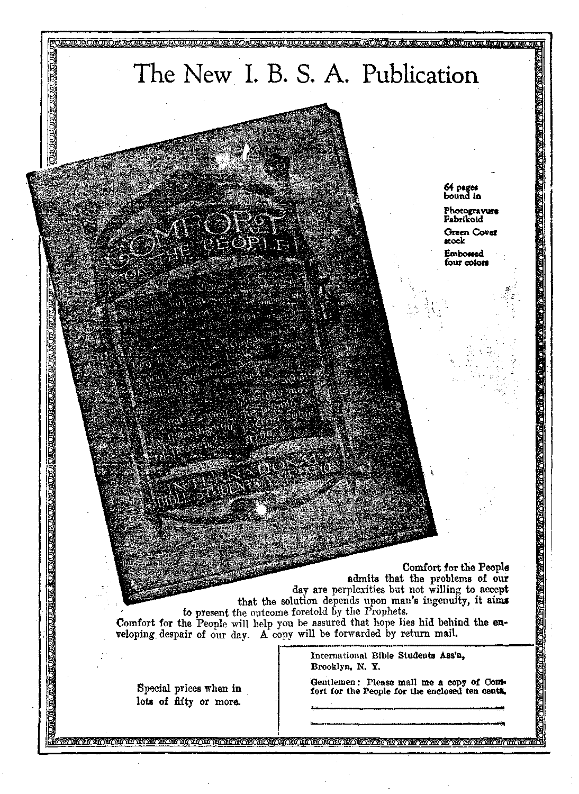

a copy’ —. 100 aYear
Canada and Foreign -Countries $ 150
OLD WORLD DYING
a Journal of fact
Vol VII Bi-Weekly No.
November 4, 1925
THE SURVIVAL
BITS OF
WORLD NEWS ■
NEV
WORLD BEGINNING
sBflaeraMtai
; ...-jawr
Radio Pbogbams .................... 94
Political—Domestic and Fobetgn
Bits of World News . .... ............. 83
An Aerial Battle Impending .... ...... .
■The Fight of the Riffs for Liberty ............ 89
Tortures in Bulgaria .................
Great Peace in Europeand America ■ . . . , , . ... . . ...
Recent Slaughters- in China . . . . , . . . . . . . , , ' 89
Religion and Philosophy
Why Small Communities Decay ............
Masses Unfit for Self-Government ...........
Moral Bankruptcy of White Humanity
Weakened Sense of ResiionsiUlity ............ 71
Youth Becoming Cynical and Godless ........... 73
' Teachers as Guilty as Parents ..............
Mental Changes in the Sexes .............
; Ominous Increase of Divorces
Vicious Influence of the “Funnies”
Part Played by the Automobile and the Movies - ..... 80
' Sixty-Three Billion Cigarettes a Year
i Effect of National Prohibition
Armageddon Sure and Impending ............ S3
Driving Headlong into Anarchy ............. 86
God’s Solution of the Problem . g-y
A Gbeat Feast fob the Peofib .............. 90
Studies in “The Hart of Goo” 93
Published every other Wednesday at 18 Concord Street, Brooklyn, N.Y,, U.S.A., by WOODWORTH, IHJDGING3. & MARTIN
Copartners and Proprietors Address: IS Coneord Street, Brooklyn, U.T., U.g.A,
CLAYTON S. WOODWORTH . . . Editor ROBERT 3. MARTIN . Businaas’Kaamiw WAI. F. HUDGINGS . . Sec’y sod Trees.
STVB Cssra A Corr—-$1.00 a Xbab Makb Bsmittancss to TUB GO1.DE3 AGB Fousiaa Offices : British . .... 34 Craven Tsrraes, Laiisaster Gate, London W. 2
Canadian .... .... 88-40 Irwin Avenue, Toronto, Ontario
Australasian ....... 49S Collins Street, Melbourne, Australia Ssiith African ...... 6 Lelie Street, Cape Town, South Africa
Catered as secend-daas sasttw at Brooklyn, N. V., nnder ths Act of Marea 3S 1878
---L^^eJJ5JU2-r~---u—^i.^.—..—:----uaaeasarrrrrrTOr^^ ■rJSS7.:;r.;;,l'^ p Igfl!
Volume VII Brooklyn, N.Y., Wednesday, November 4, 1925 Number 160
[An unanswerable demonstration of the hopelessness and impossibility of the dreams of evolutionists.—-Ed.]
THE science of Biology teaches that all existence comprises a competitive straggle wherein the strong survive and the weak succumb and perish. Given the biological viewpoint, this dictum is borne out by the entire experience of organic matter- The record of human experience bears it out, whether individually or in the aggregate; virile, aggressive stocks subjugate those which are effete and unmartial, despoiling and exploiting them.
In current life, the shrewd and resourceful profit by the inertia, docility, and stupidity of their fellows. Always a few reap the rewards of efforij while the majority are gleaners of the harvest. Neither is this all chance that fortune almost uniformly favors the energetic and the persevering; for the science of eugenics has confirmed the instinctive recognition of mankind that leadership is truly in large measure a matter of “divine right”.
The fact is that leadership is not accidental, not merely resultant from a fortuitous conjunction of circumstances. Ability forges to the top, as ice-particles rise in freezing water; it seeks its natural level. Character analysis reveals that men of eminence are such because of well-marked traits indelibly registered in their features. These traits are hereditary,
Eugenists have ascertained through exhaustive tests that intellectual capacity is inherited, that racial progress is dependent upon the perpetuation of specific individual types who furnish leadership to the masses, ins uring the multitude with their own controlling ambitions and ideals, imposing on them their own opinions and standards; in effect, thinking for them, setting the pace. It is true that an old-established caste system tends to sanctify privileged mediocrity, but this abuse is mitigated by hereditary predisposition to superior mentality.
WHOEVER is able in his own experience to compare older-settled communities with newer-settled localities must have observed the marked difference in spirit between their average citizenship. The inhabitant of the former is apt to be prosaic, narrow, dull, cynical, a plodder, engrossed in petty neighborhood routine, inclined to be jealous of Iris neighbors and suspicious of strangers, overemphasizing trivial slights and grievances, keenly alive to the competitive struggle- The latter is by contrast broader-minded, more genial, sympathetic, fraternal, responding more readily to cooperation, more buoyant and optimistic. His instinct is rather to combine with his fellows in the contest with nature than to distrust them as potential enemies.
Sociologists account for the decay of com-, munity spirit, and the stagnation of rural neighborhoods, by an exodus from them of members of the innately superior mental types in search of fields of larger opportunity. The openings on “Main Street” are limited; hence restless ambition departs for the metropolis or the West, leaving the infcrior-calibred “home-folk” to lapse into lethargy and to bemoan the decay of public spirit.
The realization that something has taken the life out of the community becomes acute, inasmuch as superiority really rans in families, and the tendency is for whole families of this type to transplant themselves into a new environment. Moreover, there is a tendency in men and women to seek mates of their own intellectual class. It is tragical that intellectuality displays a historic propensity to “race-suicide”, while mediocrity is correspondingly prolific. The consequence is that racial stocks “run out”, become like herds of scrub cattle. Both eugenists and criminologists endorse the assever-
ea golden AGE b,00*h*N-x-
ation that the rising generation of white humanity comprises a preponderating percentage of “inferior complexes", of emotional defectives and morons. »
Multiplication of Morons
rPIIE popular application of the term moron is a misnomer. A moron is an adult whose intellectual capacity has been matured at from eight to twelve years of age. But the “morons” of newspaper parlance, the criminal degenerates and socially unadaptable malcontents, should be more properly designated as emotional defectives, or mentally unbalanced, rather than unintelligent.
Scientifically considered, the rank and file of the population are themselves morons. Notwithstanding the fact that they may be in the aggregate staid, sober, conservative, law-abiding and industrious, the bone and sinew of the nation, they are nevertheless deficient in initiative and originahty. Their natural leaders and instructors are the sprinkling of brilliant minds throughout society who constitute an aristocracy of ability and to a certain extent subconsciously leaven the whole with their spirit.
The perpetual depletion of its own numbers through wilful class sterility by the Curiales is the true explanation of Roman decadence under the Empire. The servile substratum of Roman society which responded so eagerly to the teachings of the Nazarene, was recruited largely from barbarian sources—from stocks that were racially less impoverished than the moron rab-tie of parasites and paupers that subsisted on its labors and found amusement in its sufferings.
The antique world prolonged its senescence through infusions of virile northern blood, being surrounded by “noble barbarians”, whose hereditary ruling families were prolific; Eventually these barbarians overran the provinces and replenished the waning vitality of their degenerate Latin populations. No such parallel is afforded by surviving barbarian nations in the modern world; for contemporary savages linger on in our age of progress as examples of retrogressive peoples whose natural leaders became bred-out. .
THE average man is a prosaic plodder, intrinsically unfit to govern himself. Ordinarily he submits with exemplary patience to be governed from the top, enduring with equanimity even tyranny and oppression, to which he is none the less exposed from mental superiors, since self-glorification is with the majority the ruling motive, even with intellectuality.
In times of great public stress or commotion, when natural leaders fail, the common man surrenders himself to the guidance of persons who are his moral inferiors—biulliant perhaps, but erratic and emotionally unstable minds. The appeal of such leaders is then to their latent savagery, and how suddenly the veneer of sobriety and respectability is sloughed off!
Civilization has perpetuated in its scrapheaps, its slums and industrial centers, a malcontent barbarism which, according to historical precedents, in a time of furious upheaval xvill take the helm. Society in such contingency.becomes like a shaken jar, with the dregs rising to the top.
Society, in an era of decadence, illustrates the inherent incapacity of its average members to maintain a high standard of culture, by reverting to jungle standards. This is betrayed in its literature, drama, art and fashions. Conventionalism, caricature, and lifeless imitation succeed the creations of genius.
Today we have cubist and impressionist art, jazz music, the shimmy, and other emotional dances. Some cartoons resemble the uncouth pictorial efforts of children. The artists of the later Ramesside epoch depicted the Pharoah and his court as beasts and birds; similarly we have our “Bugvilles”, and the like. Correlative-ly with decadent art, morals are growing looser and still more loose.
Heroic remedies are agitated to stem the flood of degeneracy that is threatening to engulf civilization, owing to the rapid increase of mental and moral defectives. Lawlessness is rife and law enforcement lax. The public, like that of Imperial Rome, is inordinately amusementloving, meanwhile acquiring an appetite for sensuality.
Intersex discordancy is flaming up as the home influence smoulders into extinction. Reason is at a discount, subordinated to the passions of the illogical mind. Childish pastimes intrigue maturity, while adult depravity is copied by juvenility. Religion is becoming a fetishistic propitiation of the incarnate human will.
THE tocsin is being sounded by scores of reflective minds to arouse public perception of the gravitation of white humanity toward moral bankruptcy. But the “man in the street”, felicitating himself on our virtually uninterrupted series of astonishing scientific discoveries and on the magic of our inventions, smiles incredulously, quite unperturbed about his own shortcomings, wilfully oblivious of the fact that our incomparably rapid material progress during the past three decades has been accompanied by a corresponding deterioration in ideals, institutions and habits of thought.
An age which transcends all that went before it in creature comforts and conveniences, which has translated into sober reality the fairy tales of our ancestors in its sky-scrapers, elevators, escalators, automatic traffic signals, electric signs, motor vehicles, airships, radio, telepix,etc,. is meanwhile not a race of supermen to enjoy these blessings, but an atavistic jungle-type. What a paradox, suggesting that nature’s con-' servation-of-energy law is indemnifying itself for the neglected cultivation of natural human faculties by atrophying those faculties, thereby nullifying mankind’s endeavors to supplement its physical attributes with a complex mechan-ico-scientific equipment !
Man sedulously cultivates the stall-fed types, exotics, and preaches evolution; but nature’s preference is for runts, cayuses, long-horns, gutter-rats and morons. Its efforts are persever-ingly directed to perfect a creature that can flourish under the extremity of adverse pressure and of alimentary competition. Since modern life is ultra-artificial, nature produces a type that is adapted to the congested, noisy, lucernal, jazzed-up life of today; whose optics can bear with equanimity the glare of the electric globes and the strain of perpetual readjustment to focus rapidly moving objects; whose digestions are inured to slim rations of devital’ sed and adulterated foods; whose respiratory organs can handle with impunity a superabundance of CO2 and dust-cluttered air; and whose general physical economy can tolerate an excess of toxic elements.
The katabolic “flapper”, with her flat chest and attenuated frame, may not be competent to bring forth numerous sturdy offspring, such as a pioneer age demands; but her single neurotic, under-nourished, emotionally unbalanced child perhaps exactly meets the requirements of modern urban conditions. Howbeit, this type is mentally indolent, and physically incompetent to perpetuate the very conditions wherein it has its being. Once the brain-type which formulated these conditions has dwindled-into extinction, the elaborate structure of modern civilization may crumble into ruin, untenanted save by owls and bats and doleful creatures!
Victorian Standards Have Disappeared
T) ROBABLY a majority of thinking people today realize that the world is growing corrupt, that ethical standards are decadent, that some sinister influence is undermining publie morality. Such elderly people as have resisted saturation with modernist cant and propaganda to the confounding of their common sense can hardly escape the conviction that a radical de- . parture has been made from the Victorian. standards of their youth. Nevertheless, so -habituated are they to the soothing palliativea , that human nature is sound at the core and that; our age is immeasurably superior to all that; preceded it, that they concede only with re-luctance its want of flawlessness. *
“Flaming youth,” innocent of any background of experience for comparison, is naturally skeptical of adverse criticism, resenting such as envy of its youth. Untaught deference to its elders, it consents to tolerate them solely conditional to their endorsement of its program of mi trammeled liberty; otherwise they are rated as encumbrances, as brakes on the headlong pace of evolution!
If our defunct ancestors should return to life, unquestionably they would marvel at our mechanical magic, but their admiration would be qualified by disapproval of our loose habits. They might reflect: “Of a truth, we had not all this paraphernalia, yet verily we had robust health and sound minds; our weaklings died in infancy. We had cozy homes, loyal helpmates, obedient children. Our lives were rough and simple, filled with drudgery and sorrows ; but we experienced a zest in the living of them, and . were not afraid to live them out their allotted span. Our laws were harsh and often unjust, but we obeyed them. Above all we possessed a priceless consolation in our religion, amid the snares and dangers of our lives.’4 t
THE perusal of a daily paper would fill these pious ancestors of ours with forebodings; a visit to the movies would kindle their ire at our moral turpitude; a cabaret or road-house orgy,- a ring-side seat at a New Year’s celebration, where nude women dance on the tables; these would cause their memories to hark back yearningly to the cat’s-tail, the whipping-post, the pillory, stocks and branding-iron. "So this is the sequel to our labors 1 Was it to this consummation that we tamed the wilderness, drove out the loping heathen, faced perils and privations beyond the understanding of this, our effete progeny?” So might they muse, indignant at the unappreciation of the legacy of stark heroism bequeathed by themselves.
Suppose in defense of our contention we glance over the daily papers for a few months past, not dismissing with a shrug of impatience the more salient items of crime, or the jibes at the mercenary exploitation of vileness, but considering these attentively from the philosophical angle, and pondering over their significance. What impressions do we form?
Here is bare-faced swindling in cabinets, legislatures and gubernatorial chairs; there nonchalant gunmen walk out arm in arm from the court room with professional bondsmen; boy bandits and “bandit queens” perpeti’ate their robberies in the heart of the down-town districts; "vamp” autoists take their toll of old-folks’ and infants’ lives; bootleggers brazenly ply their profession in open defiance of law, not hesitating to use armed and armored launches against the “dry navy”; rapists abduct their victims in broad daylight, after unmercifully beating up their escorts; divorce sought on frivolous pretexts; suicide committed on trivial excuses.
We read of flat-bombers, pepper-throwers, juvenile murderers, girl hoboes and boy autothieves. One boy, bored by a picture show, turned in the fire-alarm. Some high-school students, experimenting with bombs, intentionally blew up a new and yet vacant store-building. Thirty years ago criminals were hardened adults. Nowadays a large percentage of them are minors. Thirty years ago statutory offenses against immature girls were unknown, except occasionally where committed by Chinamen or Negroes; now they are of appalling frequency.
TN PRIMITIVE society men bear arms in de-fense of their families and property; today “gun-toting” is so popular even with women and boys, and fire arms are so easy to. obtain, that Congress had to, by federal enactment,, prohibit mail order shipment of firearms.
The scurrilous retort of yesterday modernism now translates into blood and fire. Instead of reproaches or tearful supplications, the unfaithful spouse of today is more likely to be doused by his wife with burning gasoline.
Recent headlines show that a man killed his wife for nagging him. A woman shot her husband for muddying the carpet. A young man slew his own mother at a celebration. A maiden took her mother’s life for scolding her for late hours and irregular habits. A mother soothes her crying infant by giving it her pearl-handled revolver to play with, and the baby accidentally shoots the mother dead. One boy murders his aged grandmother, and another cuts his stepmother’s throat with a razor while she sleeps. A discharged janitor expresses his resentment by shooting his late employer.
An inmate of a home for the aged kills the sister in charge. A pauper murders a roommate in bed. A laborer strangles a six-year-old boy. Two boys, six and eight, hurl a baby into the whirling rapids below a waterfall to enjoy the excitement of seeing it drown while they throw stones at its helpless little body.
Surprising is the public attitude toward those who take the law into their own hands. A notorious gang-chieftain, slain in a gang feud, is buried with regal pomp. An immigrant woman, failing to obtain work, lolls her twin babies and is acquitted amid the applause of the courtroom spectators. Notoriety in crime nowadays excites emulation. The infamous Loeb-Leopold murder inspired imitators; while the Polish actress who resorted to euthanasia to relieve her sweetheart’s sufferings set a precedent for similar procedures. The leniency of the court in the first instance unquestionably provoked other crimes of recent months.
MORE and more flagitious become the crimes from month to month and year to year, and now the newspapers record the occurrences as entirely commonplace. An enraged woman in-* duced an ex-service man to decoy and tie to a tree her cast-off beau, and she.then beat out his ■ brains with a revolver-butt. An instructor in ? agronomy in a Southern college was found ? slain with a fire-ax, with returned examination ■ papers beside him which evidently he had not ■ marked to suit somebody. A favorite sport of i modern burglars is to tie their victims to the i beds, and then set fire to the house. One householder was found bound and gagged in his own basement, with the letters K. K, K. branded on him—presumably to divert suspicion from the real culprits. 1
A mob, led by a jealous woman, recently tarred and feathered a young lady school-teacher for the imprudence of wearing pretty clothes. A father is accused of poisoning his three-year-old son. A man is tried for deliberately inoculating another with disease-germs to procure his death; and the prosecution disclosed that it was an easy matter to obtain such germ-cultures, and no embarrassing questions asked. A seven-year-old girl confessed to poisoning several people from sheer delight in inflicting suffering. A lawyer chose the unique method of hiding his crime by embalming his victims’ heads in concrete blocks. The half-charred corpse of a minister’s wife was discovered in the basement furnace, and the ridiculous theory hazarded that she committed suicide by crawling into the fire through the small furnace door!
Irritated by his child’s inarticulate babble, a father, assisted by the grandmother, cuts off the end of his baby’s tongue. A rejected suitor tears out handfuls of his inamorata’s hair. A fourteen-year-old boy sets fire to fourteen buildings, A girl of twelve commits suicide to elude school attendance. A doctor is found guilty of an assault on a deranged girl-patient, A sanctimonious profligate entices nurses to his home to attack them. Beside the foregoing, the projected “pink parade” of naked men and women in a London park reads like innocent comedy.
Does the recapitulation of these sordid items nauseate the reader? They are but symptoms of civilization’s malady and must not be disregarded in our diagnosis. They are but a few selected examples from the catalogue of crime as indicated by the daily press, none of them of such notoriety as the Fritz Hartman case in Germany—that archfiend who gnawed the throats and drank the blood of twenty-seven youths; or the cannibal Karl Denke, who for ten years had been luring unsuspecting visitors to his lonely Silesian farm and murdering them.
Contrast the law-abiding reputation sustained by ante-bellum Germany with reports of her city marauders of today going out in bands to ravish the peasants’ potato fields; and of bandit axemen besieging farm houses and burning the occupants in their rooms. The Parisian police have been searching for an alleged woman degenerate, who nevertheless evinced rare surgical skill in dismembering the corpses of her scores of victims, leaving her grisly handiwork wrapped in newspapers in widely separated nooks and corners of the city- Russian news, is unreliable; but reports from there persist of child-spies betraying their own parents for ( candy and movie tickets, likewise the gruesome ■ tales of cemeteries turned into brothels.
■ ' i
Weakened Sense of Responsibility '
T> EVERTING to the domestic situation, we ■*-* note a lively appreciation of its portentous- \ ness among prominent educators, journalists, ! reformers and medical authorities. A solemn warning is uttered by the presidents of three of our foremost universities in their baccalaureate addresses; and a chorus of reproof and admonition reechoes from pulpit, bench, editorial desk and lecture platform, challenging the rising generation to take stock of itself and repent before it is too late. But this outburst is, we surmise, as unregarded by the general public of today as the croaking of frogs in a pond.
The reformers find an analogy between our joy-riding, jazz-mad age and the turgid sensuality of Pagan Rome, the prevailing irreligion being cited in this parallel, together with looseness of the marriage tie, the degradation of the home, the growing appetite for suggestive literature and the lascivious drama, the appalling increase of suicide even among children, the weakened sense of personal responsibility and of faith in human dignity, the insubordination of children, and the ascendancy of feminine ideals, contrary to God’s arrangement.
The ultra-artificial character of modern life is proving debilitating. The progressive acceleration of the pace of living is exhausting racial vitality, wearing out men and women prematurely, and stamping the faces of children with weariness and ennui. The exhilarations of our congested, hurried, lucernal, noisy schema of existence find a physiological reaction in discouragement and morbidity.
The Anteus impulse is latent in everyone; and it is an historical phenomenon that urban populations are not self-perpetuating, but require .continual renovation from the rural districts. If it were not unnatural and irrational to live in human dnt-heaps, this would not be the case. ..... .
Abuses of “The New Freedom” • •
HE popular cant extols “the new freedom” and “the new individualism” resultant on coeducation, sex equality, liberal concessions to childhood, etc., as indubitable evidence of mankind’s evolutionary emancipation from the mediaeval fetters of ignorance, bigotry, and superstition. It is noteworthy, however, that each of these factors in modern enlightenment has introduced a corresponding abuse. The promiscuous intermingling of the sexes in public life has deprived womanhood of its milder, more beneficent aspects, thereby augmenting the asperity of the economic struggle and defrauding the home of its lares and penates. Gaps are opened in those traditional barriers which guarded the intersex relations,- permitting license to creep in. Premature sophistication in childhood is noticeably subverting- primal innocence.
Birth control may be an economic necessity in an overcrowded world, where young men are unable to support large families and at the same time gratify the expensive desires of the modern wife accustomed, prior to marriage, to earn an independent salary. But for all that, the mental reaction to the birth-control movement is levity with respect to the sacred function of reproduction. .
The rapid pace of modern life is directly injurious to. children, in both a physiological and a psychological sense. Parents openly tolerate or acquiesce in youthful excesses, shifting responsibility to the schools; and the schools retaliate by censuring the parents for dereliction in duty.
The repudiation of authority by their offspring is openly lamented by many parents. Frequently it is conspicuously obvious that the young ones of today do the bossing. We chuckle over “kiddy-carts” left on the sidewalk for unwary pedestrians to stumble over; but our grins are rueful when a juvenile product of the 20th century peremptorily interrupts the conversation, bidding his parents “Shut up!” because the topics discussed do not interest him.
Where Coeducation is Leading
"VXTH’ERE parental supervision is looked on . ’ as an imposition and parental remonstrance unheeded, youth will venture into more unrestrained, more flagrant irregularities. A superintendent of schools not long ago circulated an appeal among parents to rescue high-school boys and girls from the disastrous effects of jazz music, shimmy dances, lovers’ lanes, unchaperoned joy rides, cigarettes and immodest dress, describing it as a “serious situation” and an “‘alarming state of affairs”. He opined that boys and girls are being perverted by the popular styles of dance, which are deliberately calculated to inflame the sex-passion.
A matronly Y. W. C. A. lecturer deplores the influence of modern jazz-dancing, suggestive motion . pictures, unseemly apparel, sexificd novels, bootlegging, and an unedifying example of parents at home, which are “making immorality popular”. Her strictures are in accord with others. The almost universal practice of “petting”, which is the new-fangled name for hugging and kissing, excites intermittent wails of protest from elders; but the “sugar mammas” retort that their- “cuddle puppies” will not take them out for a good time unless they submit to it; and the parents frequently acquiesce.
Not so long ago it was not customary for well-bred men to smoke in a lady’s company except with her express permission. A caller with liquor-laden breath was apt to be coolly received. But customs have changed. Girls now burn incense to the nicotian goddess; and “hip liquor” is so common at school dances that the spasmodic exhibitions of reformatory zeal on the part of civil and school authorities fail to bring about any abatement of the evil.
A judge of the superior court inveighs against libertinism in the “Latin quarter” of a college town, where taxis wait outside of male students’ apartments to take home drunken and exhausted girls, wrapped in blankets. A caustic editorial pen exposes almost incredible libertinism in the Boston Back Bay rooming-house district, alleging that co-eds admit nocturnal visitors at all hours of night, disrobe in front of lighted windows, and finish dressing in the presence of interviewing newspaper reporters. 'An Illinois coed was recently suspended for attending classes in her pajamas and bathrobe.
Steeped in Artificial Excitement
r. Philip Yarrow delivers this caustic criticism of present-day “civilization”:
The amusement life of America reveals an age -of general decadence . . . the stage, the moving-picture, the dance, reek with unclean conceptions of sex. Degenerate producers have thrust lustful thoughts into the minds of American youth in a way that never before in the history of our country was there such a wild abandon of uncontrolled impulses as mark the life of this generation. The Japanese declare that the American dance is destroying their country. It is certainly undermining the very foundations of American civilization. .
Luther Burbank, the “plant wizard”, apprehends that the rising generation is steeping itself in artificial excitement until the realities of life have grown flat and insipid to the youthful .palate. It feels too much and thinks too little, placing an utter reliance on the external world for its satisfactions, instead of evolving the same from its inner consciousness. lie gravely doubts if this hedonistic growing generation will prove competent to manage the complicated machinery of modern civilization when its turn comes.
Youth Becoming Cynical and Godless
INDEED, a most significant transformation is apparent in the young, especially in their attitude toward their elders. In bygone days, youth accepted its subordinate status as a species of honorable apprenticeship to maturity. It admired and copied grown people, solicitous to learn from them the secrets of maturity. Now youth is self-sufficient, obsessed with the vainglorious fantasy that itself is the finished product, the perfect flower of growth; that senility encroaches where adolescence fades. Its aim is at crystallization into a perennial state; its ideal is “incarnate youth”; its watchword, “Youth must be served I” Disparaging elderly counsel, the tone of modern youth is cynical, materialistic, anarchistic.
An illustration is supplied in a minatory editorial which appeared in a university paper, where the city police are excoriated for arresting a disorderly student. Commenting on this, a local pastor properly deplores the “superficial cancer of atheism and anarchy” which infests the student body, focussing in a “scornful'denial of God”. He apprehends that this editorial may incite some student with a “grandiose complex of mock heroics” into assassinating a policeman.
A widespread conviction exists that our standardized system of education, is insinuating agnosticism into the plastic mind of youth in the form of materialistic philosophy. The headway made by irreligion moves one writer to inquire whether woman is not “losing God at college”, answering his own query in the affirmative, adverting to the pious woman of yesterday whose sedative influence tempered the asperities of life, counteracting male harshness and intolerance.
But this negative type is being supplanted by the typical “new woman”, whom her less self-assertive sisters admire and pattern after, the champion of the feministic ideal, many of whose erstwhile masculine allies have defected from her of late to openly denounce as a fomenter of social confusion. But more of that anon.
feminine instinct is to yield a fond -®- compliance to the insistent clamor of her brood, and to deprecate a rigid enforcement of family discipline. In this connection, however, the recollection of maternal kindness renders all criticism perforce apologetic, since the same represents the consummation of tender unselfishness, being itself the eternal confutation of Nietzscheism. Nevertheless, social stability presupposes parental control over juvenile exuberance and a wholesome intimidation of animal impulses. The child must be trained, and the paternal function is to counterbalance maternal indulgence with seasonable severity. But too frequently, nowadays, since feministic ideals are ascendant, the father’s prestige is nullified by the consensus of feminine opinion.
The paterfamiliate, indeed, is in a state of semi-eclipse. Society having relieved him of the office of protector, he retains only the burden of bread-winner and, as such, for the sake of rest and tranquility foregoes his immemorial prerogative of enforcing obedience. So the child is allowed to grow up wilful, headstrong', devoid of deference toward its elders, flattered into insufferable self-esteem by too serious an attention paid to its whims and caprices, unloving.
ungrateful, made morbid and irritable by late hours and a surfeit of sweets, and his inventive faculty blunted by a glut of expensive readymade playthings.
* Families in very moderate circumstances feel . bound to provide their children with high-priced toys beyond their means; and in some families a regular percentage of the weekly paycheck is set aside to provide movie-tickets and other amusements for the children; and the latter are taught to expect this as their inherent right—not as a concession due to parental love and kindness.
Juvenile Conceit Gone to Seed
HILDREN are encouraged to develop an un-t natural precocity at the expense of their \ elders’ rights and peace of mind, wrhereby they ■ gain a distorted perspective. An eminent scientist remarks that children nowadays have emphatically adopted the view that they are the most important things in the universe. They ? disclaim any debt of gratitude to their parents, \ considering that parents exist for the sole pur? pose of affording their offspring the best pos-( sible opportunities in life; and they are right-• eously resentful, therefore, when parents seem remiss, but accept all their favors as a matter of course.
; It is natural for children to have this point < of view in default of proper instructions, but it Vis a perniciously egotistic viewpoint calculated to estrange masculine good-will; for it is in. evitable that children who are systematically ! encouraged to flout their natural protectors and providers will be rated nuisances.
Already there is apparent the beginning of a revulsion of sentiment on the male’s part toward immaturity, whose sanctity, no longer safeguarded by innocence of mind, there is an ominous disposition among profligate men to ignore. This is a latter-day evil; for even debauchery in earlier generations respected immaturity. But children today are too wise, their countenances often registering the hard, selfish calculation of grown people. Morbid children are now common, and child suicides not rare. Immorality among children is no longer restricted to the “rabbit warrens” of packed tenement-houses.
In the indictment, the schools have achieved practical unanimity in “passing the buck” to the parents; but it is noticeable, on the other hand, that previously docile, affectionate children metamorphose into “smart Alecs” after only a few weeks in present-day school.
Teachers as Guilty as Parents
F COURSE, the infectious example of schoolmates is in part responsible for the child’s perversion, but a lurking suspicion remains that some teachers, solicitous to retain their jobs, cultivate popularity by catering both to the pupils’ self-complacency and to parental partiality. Unremittingly the young one is petted, coddled, and cajoled into inflation of the ego. Our modern pedagogic science abjures coercion and the drudgery of lessons learned by rote.
Ignoring the axiom that what is acquired by effort is remembered longest, and that the mental discipline involved is invaluable, the new theory is to impart knowledge through suggestion, using pictorial means whenever possible, so as to inflict as little tedium on the pupil as possible; all of which is contrary to Nature’s method, who inculcates her lessons with a cuff or a kick, to make them abide in the memory I The Indian, training his boy for the hunt, made him bite his own finger-nails hard at the first symptom of “deer fever”.
But a mawkish sentimentality now pronounces the birch to be barbarous anachronism. So the child is spoiled for want of adequate correction, and will have to face, all unprepared, eventually the grim realities of life’s stem battle. Such a pampering of the child bespeaks indolence on the part of its instructors rather than kindness, and is really injustice, since a vitally essential part of juvenile education, discipline, is neglected. The child’s wilfulness receives additional encouragement from a standardized system of material philosophy which assumes scientific hypotheses to be incontrovertible truths, and which insinuates into the unreflective youthful mind the suspicion that religion should be relegated to the plane of archaic superstition.
HE proponents of coeducation are wont to catalogue as admirable those distinguishing traits of freedom, boldness, self-reliance, absence of coquetry and coyness, wherein the American damsel evinces superiority over her European counterpart. They forget that our traditions of chivalry guaranteed those advantages as remotely as the times of Fenimore Cooper.
They are unobservant that boyish frankness not infrequently euphemizes effrontery; selfconfidence, encroachment on the rights of others; disdain for squeamishness, shocking indecorum. By slow degrees our modern coeducational sytem has propagated flagrant abuses derogatory to social hygiene. The unsuperintended relationships of youths and maidens have instilled a sense of mutual disillusionment prejudicial to sex propinquity.
Historical precedents are not lacking where the acquirement of feminine hardness has reacted in producing male effeminacy; women attaining masculinity at the expense of the weaker members of the opposite sex. Sex characteristics are rapidly becoming transposed; the girls ■ turning into hoydens and boys into “cakeeaters”.
The dean of a famous university evoked a howl of protest and made himself extremely unpopular by berating the college men of today for eschewing study and athletics for the softer interests of the parlor and dancing-floor. The students complained that his published speech forced them to cut short their vacations; for they were literally “razzed out of town” by the homefolks.
THE participation of girls in athletics has not proven an unalloyed advantage, as commonly believed Athletic instructors of many years’ experience testify to the statistical fact that during the past three decades young women have been acquiring male attributes, both in physique and in physiognomy. The figure of the average girl is now more angular; she has gained in average stature and lengthened her stride; her shoulders have broadened; her chest has flattened; her hips have narrowed; while her nose, mouth and chin have become more accentuated to correspond. Only the brows and forehead persist as distinctively feminine.
If this metamorphosis renders womanhood more fit for entrance into the industrial arena, it is nevertheless undeniable that it argues a diminution of those anabolic qualifications in-dispensible to perpetuation of the species,’ But with all her external encroachment on male lines, the katabolic modern “flapper” manifests as tenacious a sex interest as her predecessor and is vastly less diffident in avowing it. ■
Certain Chicago co-eds are said to have found books on sex problems so enthralling that the college librarians have had to resort to police intervention to recover missing volumes on that subject. Moreover, the emancipated flapper is franker in pursuing her predominant interest than her predecessors were, deliberately translating liberty into license.
The modem girl athlete is now the model for all femininedom. Perennial girlishness is the goal, so it is incumbent on all women to artificially “reduce” the natural curves of maturity, with their emphasis on the bust and hips, and to prolong adolescent attenuation into middle life. Embonpoint is a bugbear to be averted at all costs, and emaciation is the criterion of loveliness. Hence naturally plump women make caricatures of themselves and sap their nervous vitality through ordeals of reducing and dieting, while gin and cigarettes are not disdained as welcome coadjutors.
The “half-skeletonized figure of the fashion plate”, as one critic observes, “with only a few ounces of dress goods between her and the outer world,” with her “muscle-bound torso and stultified glands and starved nerves . . . subnormal in vitality, over-febrile in activity”, is inadequately equipped to perform the function of maternity. She has not stored away reserves of vitality against the crucial periods of her life, and in consequence defective offspring enter the world.
But fashion still eclipses duty in woman’s estimation. Perpetual girlishness is the style, even for gray hairs, and not merely in physical appearance but in behavior. Having won male concurrence to sex equality, and now fearfully conscious of her own decreasing sex charm, woman is striving by an affectation of immaturity to rehabilitate herself in his esteem.
The Error of Teaching Sex Hygiene ■ ‘Rd’AN’S devotion for his mate really em-■b*-**- phasizes the cradle more and courtship less than women in general believe. Modern theo-rizers have erroneously taught that man’s attachment for his children is by nature incidental, and that women during long ages have been the means of systematically educating him away from original indifference to his progeny. And now, intrigued by their passion for novelty, many women have enthusiastically embraced sex hygiene as well'as the abstruse “wisdom” of psychoanalysis, as the latest fad in education, and are prompt to endorse such philosophy to school children.
The advocates of sex hygiene have claimed for it a clarification of morals, arguing that it is better for the child to imbibe sex knowledge from legitimate instructors instead of from depraved associates. But the sequel has demonstrated the contrary, that premature awakening of sex curiosity stimulates pruriency. It is probable that modern precocity along this line has contributed much toward impairing those traditional standards of modesty which have long been the blessed heritage of Christian culture, which sanctified home life, guaranteed its purity, inculcated mutual respect between its members and protected childhood’s innocence.
The latter-day virgin cheapens herself by listening without a blush to risque anecdotes related by male companions. Her academic knowledge of sex laws cannot suffice for her defense as aloofness and prudery did for her grandmother in her day. It fails signally to apprise her of the grave risks she incurs in accepting chance escorts or the courtesy of automobile rides from strangers. The closed cars with darkened lights, commonly parked on unfrequented side-streets in any modern city, often conceal young girls in their teens.
A kindly woman, residing in a sparsely settled Suburb contiguous to Chicago, a favorite rendezvous for “petting parties”, repeatedly braved the resentment of profligate men by interposing to rescue young girls whose screams attracted her attention. Finally she was found shot to death on her own front porch.
SEGREGATED vice can have no apologists.
This ancient evil, this grisly asylum where the weakest victims of social injustice sought refuge to hide the horror of their degradation from public view, has perpetuated racial perils from venereal contamination, threatening at historic intervals to engulf whole nations in a morass of physical and moral ruin. Nevertheless the red-light districts have temporarily served in a measure to shield decent womanhood from male depravity. “On the line” some inveterate “rounders” and young men “sowing wild oats” have learned from the spectacle of debauchery in its most hideous aspects to honor normal womanhood. But this is not always the case.
Feminine agitation was chiefly instrumental in abolishing professional prostitution; yet the intended reform has simply driven the habitues into other fields without changing their propensities, scattering them through society to sow contamination broadcast.
Contact with decency has failed to reclaim the fallen woman. Instead she has set an infectious example to respectability on whom she imposes her own base standards of conduct, which combine brazen impudence with the open flaunting of sex, condoning gambling, drinking, cigarettes, cuddling, and painted faces.
Medical practitioners announce a decided moral slackening on the part of young women, basing their opinion on the fact that there is now a larger number of women patients being treated for social diseases than men patients. They assert that young men are being deterred from marriage by the loose living of many young married women of their acquaintance and the consequent heritage of poisoned blood which must certainly be passed on their offspring.
Growth of Cosmetic Industry
IT IS not a flattering reminder to feminine approbativeness that those artificial adjuncts to beauty, now stamped with propriety by current opinion, were not long since relegated to the theater “green room” and the house of ill fame, or at the most resorted to covertly and with diffidence as a boudoir mystery.
Today, who of Victorian antecedents has not been mildly scandalized by the spectacle of ladies unabashed, on street cars or sometimes street corners, openly “enhancing” their natural charms with lip-stick and powder-puff? The sums spent for cosmetics and toilet accessories in our country during the past year reached the staggering total of $750,000,000—almost rivalling pre-Volsteadian barroom receipts!
We may surmise that the business is profit-, able, when chemists of reputation, undiscomfited by the prevalence of cutaneous diseases, find it worth while to go on record and solemnly absolve cosmetics and cigarettes from blame
for present-day blotches and sallow complexions! Ah, no! these foibles are beneficial (?), or at least innocuous—“if women would only abstain from gin-drinking and irregul ar habits!”
However, the cosmetic industry, interallied as it is with innumerable tonsorial and beauty parlors, and cooperating with manicurists, masseurs, and beauty surgeons, is an established interest to be protected. Surely never since prehistoric belles began piercing their nose cartileges to insert rings of bronze has pulchritude been so systematically made to order as in these times, when the saying is abroad that “Old age is no longer respectable”! .
Why, indeed, should nature’s reminders be suffered to reproach youthful gayety when any faded siren, past her prime, can have crow’s-feet erased, wrinkles ironed out, and a schoolgirl’s complexion coaxed back at the cost of a trifling- discomfort plus sundry dollars? What grotesque paradoxes our age affords, where - tottering infirmity apes the sprightliness and ’' indiscretions of juvenility, and little girls are ' flirtatious and blase ! The peculiar readiness of sober science now to pronounce folly as meritorious would be inexplicable in other than a decadescent, commercialized age such as ours.
THE dress and deportment of latter-day women betrays in its audacity, its accentuation of sex, and its violations of Christian requirements of modesty, a reversion to pagan standards. Scanty, clinging gowns which disclose every line of the figure are more suggestive than unconscious nudity.
Woman’s long hair was her glory, and she has parted with it. The excuse that bobbing and shingling strengthen and thicken a head of hair, besides obviating a tedious labor in washing and combing and elaborate coiffeurs, is pronounced fallacy by tonsorial experts. They point out that the practice exposes to infection a paid of the tender feminine scalp and neck which nature intended should be protected by the hair; and sometimes serious skin-poisoning results from fur dyes. Rashes and other cutaneous troubles, they aver, frequently follow shingling.
It is reported that London wig-makers, eon' fident that the nuisance of frequent hair trimmings and expensive marcel waves will ultimately lead to women’s shaving their heads, are getting ready for an expected boom in their trade. Polyandrous Lhassa in that event may still claim to have followed Paris; for the Lamaite nuns there have shaved their heads and worn red-dyed wigs of wool for ages.
Ominous Increase of Divorces . . ri'
ARBITRARY fashion exacts universal conformity, in greater or less degree, from all femininedom. Nevertheless, its reconstruing of standards of propriety may be emblematic, epicyclical to that wider discontent which centers in the divorce court Communities have always instinctively recognized in hymeneal instability a foe to social cohesiveness. In retrospect, whatever era has manifested apathy toward those disjunctive elements in matrimony which predispose to national sterility, has labeled itself an era of portending national decrepitude. It was so with Judea, with Rome; and all the pomp and glitter of our material prosperity does not gainsay the likelihood of its proving so with us.
Neither is the abrogation of conjugal continuity endemic; for the evil is virulent in other lands. But in America, where feministic ideals obtained an earlier foothold, divorce has spread like a noxious weed during the past twenty years. Since the armistice it has increased thirty-one percent. In Wisconsin the proportion of divorce to marriage during the past year is one in seven, the records of that state showing a steadily increasing ratio between divorce and marriage during thirty years. Wisconsin’s record tallies closely with the divorce situation throughout the country.
A popular conception is that “it is a man every time” that is to blame; and instances are usually cited of men who, tiring of the wife when she is old, seek freedom to marry a younger one. But the fact is that about two-thirds of all suits in the divorce courts today are instituted by women; and of the remainder one-fourth is sought by husbands on the ground of “cruelty” inflicted on them by their spouses. “Treat ’em rough” seems to be the motto of the modern “cave woman”, substantiating the theory of academicians that woman is rapidly abnegating her immemorial role of “the gentler sex”.
The dissolution of life-long partnerships by aged couples excites regret; but the popular drift toward “trial marriages”, evinced in nuptial severance after one year’s experiment, . arouses consternation. Startling disclosures are made by a metropolitan district attorney concerning the abuses in the marriage-license bureau where the brief wedlock of minors is procured by parents falsifying the parties’ ages, bo that subsequently the Supreme Court can be compelled to annul the arrangement if it prove unsatisfactory. Minor daughters are thus virtually sold into matrimonial bondage, to be abandoned with impunity when tired of. This is indeed a reversion to heathen customs, a renouncement of American ideals.
THE divorce court represents a complex of discordancies. The tiny, cheerless flat, with folding-bed set in an alcove, unimpervious to sounds, with meals purchased ready-cooked at the delicatessen, has been blamed. Husbands complain of being treated like trespassers in their own homes. Utter callousness to the proprieties by married women in good circumstances, who romp around with “boy friends” of inferior calibre at “hubby’s” expense, is cited. Some women tickle their own vanity by seeking “mental slaves”. Infidelity of husbands is the commonest ostensible excuse of restless wives, but this is quite often a disguise for fickle fancy or for the maladjustment of conflicting egoes.
A woman physician bluntly assigns “physical incompatibility” as the basic cause for presentday divorces. Out of an extensive experience in divorce cases, Judge Hoffman pronounces ninety percent of them due to sex degeneration. That marriage has come to be regarded more as an episode than a sacrament perhaps explains sufficiently the expiring embers of the hearthstone—one of the saddest symptoms of our social malady!
Yet, with all her expanded opportunities for financial independence, opportunities which have upset masculine dominance, the innate predilection of average femininity is to continue on as a “parasite on the male”, rather than to be self-supporting. Herein fairness and consistency are ignored; for, her vanity assuaged by the concession of equal rights, she clings without compunction to her “meal ticket”, meanwhile shirking her share of connubial obligations.
A deputation of British women not long ago petitioned the House of Clergy to omit the word “obey” from the marriage rite, and more recent
ly the Episcopal Church in America has been seriously considering that step. The disloyal wife may be a tyrant as well, threatening with litigation and alimony any husbandly non-compliance with her extravagances. The deserted bread-winner, with only lonesomeness for inspiration, must still toil on. '
Society is inherently fasciculate, wherein lies its strength. It becomes vulnerable through the so-called “new individualism” which, essentially unreciprocal, incarnates selfhood on the throne of duty. Our divorce courts are sowing a crop of dragon’s teeth!
A Growing Sex Antagonism
rpiIE modern feminist movement also has been held responsible for the changed attitude toward marriage. For over thirty years a steadily insidious propaganda has been directed to foment mutual hostility between men and women. Suffragette agitators have disparaged men, and have labored incessantly to convince woman of her own innate superiority; and this has frequently precipitated a masculine reaction.
Young women were called the “coming mistresses of civilization”, the redeemers of the world from man’s blundering and mismanagement. Conjugal loyalty was scoffed at; and marriage re-defined as a relation of convenience. The feministic point of view has filtered through and dominat^Ohe thought of society, prejudicing the harmWry and inter-dependability of the intersex life.
Referring to the growing sex antagonism, Herbert George Wells, an erstwhile staunch supporter of “emancipated” womanhood, suspects that, thus far, enfranchisement has served only to promote confusion; that woman has failed to “make good” as a renovator of society, disclosing, in fact, a marked incompetency to fill her new role. Instead of superwomen, cooperating with men in a world the complexity of whose modern problems demand extraordinary, serious self-devotion, modern womanhood has generally displayed frivolous unconcern, has shown an inclination to ignore sex and has set up female imitators of the successful male types, metamorphosing themselves into “a new sex of little, aggressive pseudomen”.
Women often enter public life to play a part, to satisfy their vanity, and to arouse envy among other women, rather than from serious interest in its duties. Their participation in public office is reminiscent of their adaptation of soldiers’ uniforms as patterns for coquettish garments. Wells alludes to a “vast movement toward non-cooperation which will involve the profoundest changes in social life”, remarking that “sex antagonism is a fact of very great and increasing importance in the world”.
Relying on man’s susceptibility to the sex appeal, and on man’s reluctance to fight except with other men, the modern woman while still tenaciously insisting on her own privileges, systematically encroaches on those of men. Her intrusions on male privacy bear the character of jealousy, as if the feminine intention is that there should be no place where men might elude feminine observation. A symptom of the smouldering masculine resentment at this nagging spirit is evident in the organization of “misogynist clubs” by college students. .
A NOT unimportant factor in promoting sex discord and in perverting moral standards is the widely read comic section of the newspapers. We are so inured to the burlesque nonsense of these as to be rendered obtuse to their real defects, quite generally esteeming the perusal innocent pastime. A legion of pleased “followers” of the various cartoon serials in the dailies chuckle vacuously over the mishaps and escapades of Andy, Mutt, etc., insensible of the oblique morality conveyed therein.
Nor where reprehension is evoked is it likely to be directed to the most truly culpable; for the critic would inhibit those cartoons which are so frankly and paganly unmoral and whose slap-stick episodes are so palpably pasteboard as to be comparatively innocuous, while endorsing the shallow platitudinizing of others whose simulated loftiness really confuses moral issues and misdirects sympathy into improper channels.
Ostensibly the “funnies” are for children; so complaisance is recommended toward childhood’s proclivities for mischief and self-indulgence. Deceit, fibbing, petty thefts, playing mean tricks, outwitting parental authority, intolerance of infirmity, disrespect for law, are all condoned as venial peccadillos. That adult is a paragon of excellence who gratifies to the full the childish appetite for sweets, movie-tickets and high-priced toys; but the dissentient from childhood’s conviction of its own inalienable prerogative to do as it pleases is a subject for contumelious treatment.
In comic fashion paternal prestige is studiously impugned; “young hopeful” discomfits his boastful parent by catching the biggest fish, retrieves his blundering by his own superior astuteness and self-possession, and despises his father for committing in aggravated measure the same fault for which he had just lectured his offspring.
The father’s clumsiness and stupidity, his tame subserviency to his more level-headed “better half”, his blustering show of authority •which his own progeny discreetly smiles at— these are comically but perpetually registered on the mind. The man’s pusillanimity and injustice are made a text for unfavorable comparisons. It is the brave little orphan girl who rescues the drowning boy, while the helpless and distracted tutor stands supinely wringing his hands on the bank, but who subsequently appropriates to himself full credit for the rescue.
In short the comic has supplemented its original function of mirth-provoker by pandering to the dblique moral code of modernism, participating in the deliberate debauching of latter-day ethical standards by commercialized amusement vendors.
Grievous Waste of Wood Pulp
CONSERVATIONISTS, in their solicitude to preserve our vanishing forests, deplore the grievous waste of pulp-wood entailed in the excessive use of paper. Some even recommend a drastic curtailment, suggesting as an initial reform a reduction in the bulk of the Sunday editions, so much of whose contents consist of a wilderness of advertising matter which the average reader lacks temerity or patience to explore.
The Sunday paper is often purchased primarily for the comic section; so sometimes two or more papers are bought in order to exercise the risibilities in full measure. The single page of jokes which regaled our youth has now expanded into three double sheets, so insatiate js the appetite for nonsense! The Sunday paper habit is cited as another instance of our national unthriftiness—a scandal abroad!
If paper were a scarcer article with us it might mitigate somewhat the danger from firesj
probably, also, heedless auto picnickers would be ; be less apt to desecrate the landscape by leav-i ing waste-paper to blow about and festoon it-L Self upon the wire fences, like washing on the line. It is an indictment of present-day heedlessness and disregard for others that so many lake beaches and other picturesque sights become noisome unsightly places, owing to the quantities of putrefying refuse left there by auto parties.
Even where barrels and other receptacles are provided, the khaki-clad tourists usually neglect to utilize them, arousing the suspicion that their untidiness is ingrained and incorrigible. The : imminent extirpation of our wild flowers by i vacationists who, not content merely to pluck i. them, greedily dig them up, roots and all, has I provoked an organized campaign fer their protection by nature lovers.
Pari Played by the Automobile
T THE risk of offending powerful interests, a regard for accuracy impels us to divulge : our suspicion that the automobile is not an unmixed blessing. Considered obversely, its advantages are manifold and beyond computa-: tion, and it enhances for multitudes the joy of living; reversely, the automobile multiplies the hazards of life, discourages physical exercise and promotes extravagance. Commensurate with that social and economic integration which the good-roads program has so pronouncedly furthered is the enormously augmented tax burden resultant therefrom; moreover, the passing of rural isolation exposes the countryside more than hitherto to chronic visits by urban criminals.
The automobile may help the average citizen to get out of his rut more easily and more often, but at the expense of acquiring new worries over gas-bills and cars bought on the installment plan, supplementing his normal anxieties concerning the H. C. L. 1 Glaring headlights are a prodigious annoyance to pedestrians and the cause of frequent collisions. Monoxide asphyxiation, in both garages and closed cars, adds a new item to the toll of human mortality.
• Motor-vehicle accidents are so numerous as hardly to excite comment, dreadful as some of them are, especially when occupants are burned to death under overturned cars. The difficulties of traffic regulation are aggravated by inadequate license laws, whereby incompetent and immature drivers are not precluded from imperilling public safety.
The auto has notoriously facilitated all manner of crime. Its contribution to youthful delinquency we have already noticed; its responsibility for the increase in optical troubles is shared about equally with the moving-picture; both subject this most sensitive of organisms to prolonged, unnatural strains, exacting too much i of the accommodative function, the ocular mus- I cles, and the retina. Furthermore, the insati- । able craving for speed exhilaration has im- i pressed the age with a character denoting haste I and recklessness, until "stepping on the gas” ! becomes a synonym for joyous abandonment to ; the fleeting moment, with blissful disregard for i future consequences.
Downward Tendency of the Movie
T HE moving picture might well have been a potent force for good, but has proven otherwise, gravitating like the most of our commercialized amusements into the control of avaricious and unscrupulous producers, whose unerring instinct for exploiting human frailties has directed them into selecting scenarios and staging plays which portray "triangle” and divorce themes, plots which glorify crime and lawlessness, and scenes which emphasize sex.
As one critic expresses it, not only lust is suggested, but lust in a state of degeneration. Another disgustedly avers that the movie audiences are being dragged through a “silly, sordid, sensuous stream of moral infamy”. The producers on their part retort with sneering vilification of their detractors as prudes and illiterates, square-toed Philistines, devoid of true artistic appreciation.
The more reputable promoters, who recognize their obligations to the public, make no attempt to conceal the rottenness of the industry, where the dollar is paramount and decency subordinated to dividends. But they plead in extenuation that to elevate the screen has been proven by experience a business error; for it has happened repeatedly that educational films, produced at great expense, have turned out “dismal flops”, from which the picture fans turned away with indifference to flock into theatres which featured "flapper stuff”.
So transparent is the public taste for pruriency that wily promoters and agents capitalize the censorship, introducing risque scenes and
NooMBaa 4, 1025
situations into oSierwise vapid scenarios, and then playing to packed houses while the cases are being contested in the courts. Scandal is good advertising, tickling the public’s olfactory sense as carrion draws flies. Some films, flatly , excluded from home consumption by the censors 'because of their vileness, are exported to Latin America and the Orient, there to create unsavory impressions of American life.
UT even clean pictures can not be indulged in to excess with impunity, either from a
physiological or from a psychological stand-point—the elderly are punished with optical dis. turbances, the youthful by a debilitated nervous system on which continued excitement acts like electric wires which an overload of current has burned out. The emotional faculties respond promptly in youth to external stimuli; but the , intellectual faculties awake reluctantly. Therefore the swift transitions of vivid action register H powerfully on the cerebral sensitive-plates of i youth, cloying the imagination with a diet of ■ thrills which make reality’s daily routine seem dull and insipid by comparison.
It is common for children to attend the shows every night in . the week and then to lie awake for hours afterwards, unable through excite-inent to compose their minds for slumber. Children require more sleep than do adults, and an insufficiency renders them liable to premature ~ nervous break-down.
False standards and a distorted perspective are another penalty imposed on the child. The very defects of that glorified personage, the ; movie hero, are transfigured into virtues to be copied by a concourse of humble admirers. His own code, conspicuously the reverse of edify-ing—as it is most apt to be—sets an infectious ; example to myriads of fans who idolize his every gesture.
. The affectation and artificiality of the heroine , are deemed worthy of imitation by budding : maidenhood, whose undistinguishing mind incorporates as an integral factor into its criterion of life the protracted posing and ogling of the “close up” and the sickening silliness of the movie kiss which, until recently, was prohibited by law from exhibition in Japan.
The fabulous fortunes amassed by stars of preeminent talent but unstable character to be spent lavishly on questionable entertainments contribute to that lure of the screen which has complicated the runaway boy and girl problem. Every little while some callow aspirant to screen honors joins the needy throng of would-be film artists who earn a precarious livelihood by playing minor roles.
There, perhaps their distressed parents eventually locate them, mingling with the dregs of Hollywood’s movie colony and absorbing that atmosphere whose unwholesomeness became palpable to a shocked public through the “Fatty Arbuckle” case and other similar revelations.
A' governor of Kentucky likened our movie age to degenerate Rome with its “panem et dr censes1’. We have no pauper proletariat to placate; so our games are not gratis! Nevertheless, a generation enervated by vice and luxuriousness is more amenable to the exactions of arbitrary privilege than a race of Puritans would be.
THE popularity of the cigarette has been no insignificant contribution to racial deterioration. Originating among effete Orientals its preliminary conquests in America were confined chiefly to members of the Latin race and to “dudes”. The habit is often acquired without initiatory nausea, hence is peculiarly seductive to adolescence. The “cute” little packages of paper tubes, with their aromatic fragrance, have a neat appearance which appeals to modern women, especially when the fascination is enhanced by cork tips, gilt monograms and perfume. But it is particularly prejudical to the more delicate organisms of women and children, and its rapid spread among femininity and youth in these latter days is a racial tragedy. The war fostered the habit among English women, whence the fashion emigrated to the United States, where previously the number of women smokers was negligible. '
The effect of the cigarette is immediately sedative, yet in the sequel it is more deleterious than either pipe or cigar, because the mild smoke being inhaled directly into the lungs introduces the poison more rapidly into the respiratory system and thence into the circulation. The cigarette is a brain-rotter, mildly stupefying the faculties and blunting their capacity for natural enjoyment, demanding excesses,, stimulants, excitements to counteract the jaded, listless feeling which itself brings on. It saps vitality, impairs intellectual activity, and predisposes to premature debility.
In 1923, sixty-three billion "fags” were used here, quadrupling the consumption of ten years before; while the sales for 1924 and 1925 are undoubtedly far greater. Manufacturers attribute this astonishing increase to the growing number of women devotees.
THIRTY years ago, among English-speaking peoples, the cigarette-smoking woman was classed with social outcasts. It was termed the badge of the street-walker. The superabundant energy of nations of Nordic stock has been maintained, we believe, partly through the preservation of their women and immature boys from nicotine pollution. This was an instinctive precaution recognized also by the American aborigines, with whom smoking commenced as a religious ceremony pertaining to spirit-invocation.
Abstinence of women and children from tobacco in our forefathers’ day, however, was not. solely a matter of social hygiene; our ancestors used it in its cruder forms, wherein it is too rank and potent to appeal to finer sensibilities. Only the masculine physique can readily inure itself to the raw poison of the pipe and cigar, and accordingly the use of tobacco was reckoned an exclusive adjunct of manhood, like the bulla of the Romans.
The effect of nicotine is to deaden the delicate perceptions, dull the imagination, and encourage a prosaic viewpoint on life. Probably these factors have contributed to reconcile the factory hand to his drab surroundings and to stifle in him his natural yearnings for chlorophyll and ozone, thereby deferring the day of social rebellion and revolutions. Foremen in southern cotton mills used to—and may yet, for all the writer knows—deliberately teach their little girl “hands” to “dip snuff”, telling them they would find it a great “consolation”.
tions were tangible, being subject to old, established and controllable conventions. But the ungovernable frenzies of the new-style “hootch hound” are beyond conjecture, terminating not infrequently in the psychopathic ward or the morgue.
During recent decades the liquor habit was becoming more and more disreputable, being restricted largely to the lower strata of society; but federal prohibition has engendered in the “scofflaw” a spirit of bravado, a tenderness about personal liberty, so that the erstwhile feminine applauder of Carrie Nation and her hatchet is now fain to connive at her husband’s concoction of mysterious and head-racking ‘Tome brews”. The sober citizen, who seldom or never visited a barroom, now winks diabolically to his Vis-a-vis as he toasts “Success to crime!”
The bootlegger finds customers not merely among the old-time “bar-fly” class, but in good society, among college students and high school pupils, upon whose undiscriminating palates he can foist any brand of “tombstone” abomination masquerading under counterfeit stamps and labels as the genuine “bonded stuff”.
The toll of alcoholic wreckage in this current “moonshine era” is said to exceed vastly that of pre-Volsteadian times. In 1924 there were 390 deaths in Chicago in one week from this cause. The profits are enormous; consequently rumrunning and bootlegging are international in scope, and present international complications. Perpetually the liquor fleet hovers off Rum Row, just outside the twelve-mile limit, necessitating the federal government to maintain an expensive “dry fleet” to prevent smuggling. Some of the rum-boats are armored and carry guns; nor do they hesitate to pepper their federal pursuers. Piracy on the Atlantic had been ancient history until the rum-runners of prohibition days revived it by plundering each other’s cargoes.
Effect of National Prohibition ' Hair Tonic Factory Output
THE abuse of alcohol has always been ac- “W/TUCH of the illicit liquor is synthetic, com knowledged to be a crying evil in the world; taining ether, wood-aleohol and other poi* but it remained for latter-day stupidity to per- sons. A large percentage by report is repetrate the grotesque folly whereby reforma- distilled hair tonic from which the poisonous tory zeal in weeding out one abuse has prepared ingredients of denatured alcohol are sup-a seed-bed for more noxious growths. The posed to be eliminated in the process, the residue drunkard was ever a madman; but his aberra- being artfully disguised with resin, bourbon*
extract, caramel and creosote, to resemble Scotch whiskey or gin.
‘ AVhat fatuous blundering on the part of our reformers to steep, in the guise of subserving public welfare, legitimate cleaning fluids and the like with deadly poisons whose presence proves no deterrent, to their use as a beverage by thirsty souls, in spite of the fearful risk involved of death or blindness!
! Meanwhile the jails, poor houses and asylums are not being vacated, as foretold, but overcrowded. The police force is inadequate to cope with the augmented crime situation. Innumerable druggists have, their licenses revoked for misuse of the prescription privilege; basements in tenement districts harbor private stills, green with verdigris, concealed under piles of refuse and filth; hair tonic factories are working overtime and new ones being built; and California vineyardists find a readier market for the raw material for home-made wines than they used to find for the finished product. As its opponents sarcastically observe, we have “Prohibition without prohibition”.
AN ENLIGHTENING example of reformatory impotence when in conflict with profits is afforded by the late conspicuous failure of the International Ophrm Conference. The mere existence of a necessity for such a conference being recognized, however, emphasizes what few private citizens realize: That the narcotic menace is assuming alarming proportions in recent years. In our youth white immunity to this peril was taken for granted; we complacently congratulated ourselves on our innate superiority to such outlandish Oriental weakness. Now it is disconcerting to learn to the contrary.
The suddeiu. alarming spurt which the drug habit has taken in all countries is ascribed largely to the reaction from war’s hysteria. Post-bellum Great Britain contained numbers of discouraged nerve-racked victims who sought relief in drugs. These were people from every stratum of society—ex-service men, merchants, actresses, women of fashion, whose cravings were ministered to by pasty-faced, dirty-fingered denizens of the slums, sneaking out of their malodorous lairs to dispense their wares under the very bright lights of West End night clubs. '
The evil grew apace. Dope parties resulting in suicides were featured by London newspapers as a common occurrence, until the scandal stirred up Scotland Yard to strenuous efforts for the evil’s abatement. In Germany the Castle Fuerstenstein prosecutions, implicating members of the proudest Prussian nobility in the disgusting “Knights of the Round Table” orgies, where the unspeakable Pompeiian immoralities were revived as a form of sex worship, served to stimulate emulation until degenerate practices assumed such nauseating proportions that one newspaper was devoted almost entirely to advertisements of this nature.
AS IN London, the scandal eventually provoked the German police to undertake a nation-wide roimd-up of dope-defiled men and women and the closing up of the dens of degeneracy where cocaine and heroin were sold; these dives of unnatural practices being almost uniformly found associated with drug addiction. This campaign was conducted against the protests of distinguished psychiatrists, who labeled it persecution of mental irresponsibles who deserved protection.
Similarly in Paris, the gendarmerie raided the all-night clubs and cabarets which catered exclusively to men, where the abnormal habitues danced with professional “female impersonators”. Incidentally it was discovered that these foul places were focal points in the cocaine traffic.
To rebuke our national vanity, we are told that America consumes more narcotics than all Europe combined, and that the smuggling of drugs and the illicit sale of them grows by leaps and bounds. “Snow parties” are yearly becoming more prevalent, and recourse to hypodermic “shots” is not now restricted to members of any special class, even school children no longer being exempt.
In particular, young clerical and factory workers, frequenters of dance halls and cabarets during their hours of relaxation, resort to drugs for the suppression of fatigue and to key themselves up to renewed vivacity. Criminals, likewise, find opium a tonic in their nefarious pursuits, an inspiration to those peculiarly audacious and atrocious crimes which characterize our day.
' The presence of heroin in cough-drops and qther patent and prescribed medicines assists notably in the spread of this virtually incurable habit, one of whose most ominous aspects is that the victim becomes dead to all motives of honor, principle, virtue and loyalty, and is obsessed with a mischievous eagerness to impart the vice to others.
First Steps in the Moral Breakdown
HE popular explanation of the undisguis-able moral breakdown of today is that it is an “aftermath of the war”, a period of demoralization consequent on all great interna-tionar conflicts. This were reassuring if true, but the theory is not comprehensive enough to account for the appearance of these symptoms some years prior to the eagles’ banquet which began at Sarajevo.
Actually, the war simply accelerated the progress of a malady which had been stealthily fastening itself upon society for at least two decades. Did not the Thaw trial and the Long Beach scandal of twenty years ago betray the popular state of mind in some measure? Was not the cake-walk a prelude to the fox-trot and tango, which in turn led up to the shimmy? Did not ragtime prepare the popular taste for jazz?
Does it not seem as if the bicycle bloomer girl of thirty years ago served to test out the public’s patience with elderly fat ladies in knickers and the bare-legged ballet? Even the erstwhile penny-arcade with its impurities showed which way the wind was blowing, and presently the shop windows began to display literature and pictures of an equivocal nature.
The women of yesterday did not affect modesty ; it was inherent in their nature; their modesty was the criterion for masculine behavior in public. Today their fatuous cheapening of themselves is reflected in a relaxation of social discipline.
The prevailing world-wide moral laxity may be attributed to two chief factors. The first is that modernist code of ethics which in the popular estimation has invalidated the Mosaic fundamentals; the second is racial degeneration. If we are to endorse the eugenist view that racial deterioration in human beings is analogous to the breeding scrub cattle in a herd, bring consequent on the race suicide of the superior strains of mentality and the unregulated multiplication of the unfit, our argument is not that natural leadership implies altruism. On the contrary, self-glorification is generally the prime motive; but in serving themselves they incidentally benefited the race upon whom they imposed their ideals. Of course, their ideality was itself imperfect, and their leader -rip often degenerated into tyranny. In a world under the spiritual government of the forces of evil, their rule was also evil; but it was better than none.
As Sheep Having No Shepherd
ERE'R’T of their leadership the nations sink into inertia, stagnate, and lose inspiration. History bears this out in wearisome repetition. Because these “supermen” were only less imperfect than the masses of mankind, they directed the latter’s destiny; but their influence was not unadulterated beneficence by any means, by reason of their own imperfections. They could not raise the herd beyond their own level.
Virtue is not more a concomitant of intellectual excellence than is its lack, Juke’s pedigrees notwithstanding. We assume that a line <>f statesmen, bankers and clergymen represents virtue, because all of them kept out of the jail and the poorhouse. Our sympathies are Ciceronian, with the “good”, meaning the prominent and reputable. Howbeit, success is intrinsically intolerant of failure, and the successful type usually find compassion for their less fortunate brethren an incumbrance to their own progress.
It is a trite saying that “the poor help the poor”, having a deeper measure of fellow-feeling for misfortune; nevertheless, it is axiomatic that the rank and file are deficient in logic and narrow in their sympathies, and are often led through misapprehension into injustice. The intellectual type, through selfishness, suppresses the voice of conscience; but the masses respond eagerly to the trumpet call of righteousness when their ears are not stopped by false teachers.
We reiterate: The average man is a prosaic plodder intrinsically unfit to govern himself, in our present state of human imperfection. Democracy is a noble ideal; but in practice an oligarchy of wealth invariably becomes ascendant.
Deprived of natural leaders, the commonalty falls under the spell of brilliant, but emotionally unstable, minds, and is ruled from the bottom. More than ever is this so in oui’ age, which is Novemmb 4, 1925 breeding a special type engendered in ultraartificial conditions of life.
IN THE glare and racket of the canyon streets, no awe is sensed of impending Armageddon. Engrossed in his customary street life, the average man derives from its matter-of-factness a false security. His tympana record no ■sounds except street-sounds and the jingling of money.
Only out in the wind-blown solitudes is eternity overshadowing. There the cosmic forces are realizable. How puny is man and his works under the unfathomable vault of heaven! The cities only wake to a like realization in the face of an earthquake or a furious tornado. The social earthquake that will arouse our modernized citybred type of human being into spiritual consciousness of the eternal verities is yet to come.
The primeval is both sublime and appalling. Nature is a stern schoolmistress, pitiless to the weak of heart; but there are no slums in the out-of-doors, because Nature incinerates her rubbish. On the other hand, the slum is in a sense an artificial jungle whence emerges ape-browed atavism, to howl down gleefully our lofty platitudinizing—“the survival of the fittest” and “the will of the majority”—and to demolish our idols of culture, fraternism and social prestige.
Unadaptable and unconforming, unconverted to our “better class” ideals, and hating our calm assumption of superiority, the under man slinks and snarls in the stinking shadows of his alleys, ready to foist on a bewildered leaderless race his own grotesque, reactionary jungle standards, which are already beginning to infect us, as in jazz music and cubist art.
We have already noticed that criminologists and psychiatrists now hold that the criminal is not usually an intellectual defective, but one emotionally unbalanced. Intellectually his brain may surpass the average, but the emotional hemisphere of his cerebrum is organically not normal. He is unable to visualize adequately the consequences of his acts; but, for all that, he possesses the identical qualifications for inspiring imitation and obedience by the multitude that the really superior brain is endowed with, though in the criminal’s case the inspiration is toward retrogression and anarchy.
। Our modern humanitarian code, with its asylums, preventative medicine and coddling of criminals has counteracted nature’s efforts to eradicate this type; it has proven a miscalculated benevolence, from a sociological standpoint, permitting the unfit to become numerically formidable, prejudicing social stability.
The emotional pervert is an ingrate, hating the system which fostered him, aiming to reduce all men to his own level. He is a monstrous, degenerate shape, striking a chill of apprehension throughout society, which suddenly may find itself called on to account for him. When the czarist regime ended in Russia what bestial creatures returned from the convict mines and prisons of Siberia and Sakhalin to nurse a gloating vengeance in the Red Terror!
IVILIZED humanity, in some respects, seems today to be approaching a condition approximating senility. Its worship of youthfulness is characteristic of second childhood, as well as its intense selfishness and greed. Other symptoms are: Its fossiliferous conviction of its infallible judgment; its intolerance of any viewpoint besides the modernist; its infatuation with trifles; its refusal to consider the future lest it experience trepidation; its stale avidity for salaciousness; its propensity for startling the proprieties; its denial of an overruling Providence; its loss of racial virility.
In every civilized nation except in the Orient the birth-rate is steadily declining. To demonstrate an unimpaired youthful agility, modern humanity goes capering and cackling to the brow of the abyss. Its enthusiastic loyalty for this “present evil world”, whose pleasant sins it is loathe to relinquish, arouses its most bitter invectives against all adverse criticism.
To stimulate its waning energies and preserve its youthful masquerade, modern “civilization” has recourse to beauty doctors, reducings, dietings, rapid motion, narcotics and jazz. Jazz has been stigmatized as “jungle music”, epitomizing the soul of the “under man”, appealing to the passions rather than the higher emotions, rousing the animal nature in man at the cost of the spiritual.
In verity, its jangle of discords seems sometimes reminiscent of jungle noises, combining the trumpeting of elephants with the growling and snarling of carnivore, the grunting ana
squealing of wild pigs, the chattering of troops of monkeys, the crash of falling trees in a tornado, the booming and banging of the ■witchdoctor’s: drams and the exultant yells of cannibals as they prance around their shrieking victims. : ■; •, ■ •
The widernote is the hoarse roar of the rising tempest, ominous, triumphant, irresistible. There is something momentarily refreshing in jazz played rapidly, something grateful and powerfully stimulating to the animal nature in us. For the moment jazz incites to the shimmy dance and the reckless joy-ride; tomorrow, perhaps, to la loAiternef
Selfishness Gone to Seed
IpOR at least a decade before the war the unconfessed ethical code of civilized humanity had been a sort of spiritual Nictzscheism, ameliorated somewhat by perfunctory observance of materialistic humanitarianism. The war exposed the speciousness of the title “Christendom”, uncovering the recrudescent' paganism which lurked beneath the veneer.
. The sponsors of this nee-paganism were, on the one hand, science which, in its zeal to emancipate human thought from the fetters of superstition and bigotry had strayed off into tacit agnosticism, thereby depriving its disciples —who in an era of universal education comprised the masses—of their sole tangible ethical refuge, religion. On the other hand was a ruthless commercialism, inculcating ideals primarily selfish, mercenary and unscrupulous. The ideals of commercialism were based on cunning, fraud, deceit, and the intensified competition of individuals, rather than on mutual cooperation for the common good.
These two factors, with the enthusiastic support of press, pulpit, and the schools, elaborated that modernist code of self-worship which Prof. James Leighton characterizes as a “new individualism of a Sophistical brand for which the individual with his momentary whims, passions and impulses, is the sole measure of moral values”.
Such religious spirit as still lingers in the world has mostly been ossified into formalism, or bewildered in labyrinthine speculations concerning the subconscious mind, into pantheism, ‘“mental science,” spiritism or psychoanalysis.
NY book salesman will vouch for the statement that the best sellers of the day are works on yogiism, astrology, palmistry, psychoanalysis, and on the occult generally. Of these, psychoanalysis seems now to be the most popular of the mystic cults. Properly this is a pseudo-science, representing a revival and readaption to modern rationalism of the ancient Babylonian dream-interpretation.
This ancient fallacy was so wide-spread and deeply-rooted in its day that divine purpose served itself by utilizing it in an illustrative and interpretative way, the same as divine purpose nowadays may use any popular conception as a medium for impressing lessons.
In its modem reincarnation, dream-interpretation finds its chief exponents in Drs. Freud, Reich and Carl Yung, each the head of a separate school of psychoanalytic thought. All, however, agree in the main essentials, basing their systems on the “suppressed impulses” which, according to them, are sex impulses. Their votaries are said to be chiefly women, and usually young and idle women.
A decided flutter was occasioned in American high society last winter by the arrival of Dr. Yung from Vienna. A young American adventurer went to London and found it profitable to pose there as a professor of psychoanalysis, until haled into the courts for alleged improper behavior toward the young women, his clients. The latter wTere prompt to exonerate him of the allegations, averring that they merely discussed “sex problems” in a frank and friendly way.
There is no question that sex worship was the basis of all heathen religions, and that the deified sun and moon also represented the incarnate paternal and maternal principle. The “immortal soul” fallacy seemed to find justification in procreation. Modern “prudery” forbids the presentation of ancient mythology without drastic expurgations. The missionary dare not violate decorum by explaining to the home circle what indecencies he had found sanctified in heathen worship.
So admirers of Orientalism have found it possible to inoculate the West with glorified versions of heathen philosophy. Among these may be catalogued the psychoanalysis systems. Whatever their alleged merits, noted psychiati lists are unequivocal in their declarations that much of the prevalence of mental disorders, especially among the young, is due to dabbling in this new “science of dreams”. They allege that evil and morbid suggestions are instilled into sensitive minds, with disastrous consequences. ,
Parents, themselves votaries, take their young boys and girls to professionals for examination, consulting men who are often wholly lacking in pathological training or experience, and relying implicitly on their advice. The brain is too delicate an organism to be trifled with in this way, and the “diagnosis” is liable to shock and terrify the patient into mental derangement.
THE prevailing attitude of latter-day humanity is: Indifference toward the hereafter, forgetfulness of the past, and preoccupation with the fervid, jazzed-up now. Skeptical of retribution, mankind shrugs away the bombastic utterances of orthodoxy, concurring heartily with such newspaper headlings as “Collins to sleep forever above the mouth of his cave”.
A new hedonism has gained currency, coupled with an intense suspicion that the welfare of other mortals in some occult sense prejudices our own; that to extend sympathy to another is to assume that other’s burden. Hence comparison becomes logically a suicidal weakness. The horrifying, daunting, heart-chilling part of it is that in these latter days this suspicion seems to be a verity; that all existence has become a sheer will-contest between entities!
But once thoroughly convince humanity of this, what remains of human inter-relations except a growing mutual antipathy, until in very sooth “every man’s hand will be against his neighbor”? Persuading ourselves that “all things continue as they were”, we frolic in the creeping shadow of Armageddon!
Considered biologically, it is incontrovertible that all existence implies an ultimate survival of the fittest; but nature’s criterion is not man’s since his fall in Eden, else he would not make Juices and his generations a model. Because we behold in the quiet, where plant life fights its way upward to the sunlight, a no less rigorous struggle than in the teeming ghetto, must we infer therefrom a biological necessity for the interminable continuance of this law?
Science replies in the affirmative; but our hearts remonstrate, reinforcing their intuitive perceptions with the hint supplied by maternity that even in nature this survival-of-the-fittest law is not absolute.
In a sparsely settled region often we find human beings rated “more precious than fine gold”, where men must combine to combat nature. Call it the “herd complex”, if you like; in psychological parlance it is the cement which makes durable any style of social edifice, the opposite pole from unqualified individualism.
AFTER all, the evolutionhypothesis has failed ■ to substantiate itself as a mathematical certainty. Its chain of alleged evidence may prove something quite the contrary to the scientist of tomorrow. And no evolutionist can in candor deny that always his theorizing is baffled by a very real phenomenon of degeneration. The two processes go hand in hand.
Where scientists are so obviously puzzled the lay mind may permissibly suspend judgment. Let each euglena determine its own destiny— whether to take the green path or the red—or have its choice predetermined by laws beyond our cognizance; for if no finite mind can grasp the seeming paradox of free-will in a preordained creation, are we not justified in supposing that human reason is circumscribed in its possibilities? '
Faith must remain the guiding star where reason falters, and through faith we are given the assurance of a new heaven and new earth wherein dwelleth righteousness. Though this anticipation appears to be contrary to the sum of aggregate human experience, as far back as our records extend, nevertheless we are assured by faith that it is a promise of certainty, which promise, in the face of progressive world-wide racial degeneration, is the only valid hope and comfort humanity has left.
The “survival of the unfit” is a transient state of affairs, a passing phenomenon, perhaps indicative of the divine purpose that mankind shall learn in multifarious ways the futility of opposition to God’s immutable laws, so as to be restored ultimately into harmony with these laws and inherit eternal life in a perfect organism, and with perfect surroundings, even as he might have enjoyed from the time of his creation had he not chosen the bitter pathway o£ sin, degradation and death.
[Radiocast, with other items, from Watchtower WBBR on a wave length of 272.6 meters by the Editor.]
Eskimo Concert Huard in Chicago
ONE of the most interesting programs ever transmitted by radio came in to Chicago at two o’clock on. the morning of August 12th, when an Eskimo quartet, located on the MacMillan exploration ship Peary at the northern edge of Greenland, sang three numbers of Eskimo songs. The voices came through distinctly, and were rebroadeast through WJAZ.
THE Chicago Radio Digest reports that
Soviet Russia is to erect the most powerful broadcasting station in the world. Without a doubt it will be used to send out communist propaganda, and will not be amenable to any advice or suggestion from the League of Nations. The Radio Digest reports that Germany and France are already considering how they can jam the air so as to prevent reception; but it is said that the jamming of the air would prevent all reception, even of SOS and other important messages.
THE greatest importance is attached to the discovery that the earth is inclosed in an ionized envelope located about one hundred miles above the surface. Experiments have proven that one series of radio waves ascends to the roof, hits it, is deflected to the earth, ascends again and so goes around the earth zigzag, accounting foi* "fading” and "skip distances” in broadcast reception. The result is predicted that shortly a $60,000 high frequency transmitting station will give better service than present high-power stations that have cost $2,000,000.
Fourth of July Foolishness
THE American Museum of Safety has collected statistics which show that on July Fourth of this year 111 persons were killed and 1,030 injured in connection with the use of fireworks. Most of these -were in small towns where there are no restrictions. In New York City there were only mishaps during the day. It is believed that more persons have been killed in the United States by Independence Day celebrations than were slain in the war for independence itself.
Canada’s Broadcasting Stations
AN ADA has ten broadcasting stations from the Atlantic to the Pacific, all owned by the Canadian people- All the transcontinental and many other principal trains throughout the Dominion are equipped with radio receiving sets for the entertainment of passengers.
.Sudden Changes of Weather
TpUROPE reports unusually sudden and un-usually severe changes in the weather, due to sun-spots. In certain districts the heat was so great that crops burned up in a day, only to be succeeded by a period of cold, rainy weather. Astronomers report that there is something unusual going on in the sun, but they are uncertain as to its nature. In Paris, on September 6, four persons fell dead from congestion of the lungs caused by the severe cold weather.
New Land Rising in the Pacific
TpDwisr Fairfax Nauxjcy, geophysicist, is re-•*-J ported by the New York Times as expecting within a generation the formation of a now continent fifteen hundred miles long and five hundred miles wide in and about the area now covered by the Hawaiian Islands. He gives details showing that vessels are now barely able to navigate where a few years ago the waters were one to two miles in depth, and that this upthrust covers an immense area. He considers the Japanese, San Francisco and Javanese earthquakes as all preparatory for this vast upheaval.
INTERESTING indeed were the air races for the Schneider cup which were held at Baltimore, October 24th. Word had come from Britain that in order to beat the time of their best machine it would be necessary to fly faster than four miles a minute, while unofficial tests had showed that the American Curtiss machine could actually fly, under proper conditions, over five miles a minute. The Curtiss engine, made in Buffalo, runs at such tremendous speed that in testing it out it is run in a specially constructed room, with no human being present. The operation of the engine is watched through peep holes. The object of all these precautions is to save life in case the metal of which the machine is made should not stand the strain.
THE Los Angeles Record with language unique says: “The devil take those miserable Riffs! They believe in freedom of religious worship and persist in fighting for their own country. It is time for every American patriot to come to the rescue of Christian civilization in Africa. There’s money in it.”
Tortures in Bulgaria
THE World Tomorrow presents credible evidence that tortures more inhuman than anything human being's over thought of prior to the World War are being practised in Bulgaria, and by the Bulgarian government at that, in one of the maddest white terrors that ever swept over a people. Justice, decency, mercy seem to be things of which the present Bulgarian government has little knowledge. The fact of the business is that violence accomplishes nothing. The World War has turned the world into a hell.
Economy Wrecked the Shenandoah
CAPTAIN Anton Heinen, expert Zeppelin navigator, created great excitement by his statement that before the Shenandoah’s last flight he warned Lieut. Commander Klein, Jr., that the boys were going on their last flight and that their lives would be sacrificed in the effort to save helium. He declared his positive knowledge that the elimination of ten of the eighteen valves was the primary and only cause of the disaster, as the ship was well able otherwise to ride the storm.
The Looting of the Shenandoah
WITHIN twenty-four hours after the fall of the Shenandoah, broken by an Ohio storm, everything movable had been stolen, including the ring and the wrist watch of the dead commander. Even the ship’s rations were stolen, and sections of the gas envelopes were cut up and sold to sightseers. It would surely seem that in these days of long distance telephones and high-powered motor cars the government should have been able to get some responsible person on the job before everything movable was stolen. But what possible excuse can be made for the citizens of the community who witnessed and allowed such things to take place without taking steps to prevent it? Hundreds of the missing articles have been recovered.
THERE is great peace .in Europe. Jugoslavia has bought 150 military airplanes from France; Russia has purchased a large supply of the same from Holland; Fokker, the Dutch engineer, has designed a plane which will carry six machine guns at 180 miles an hour; France is establishing an air base at Cherbourg (across the Channel from Southampton, England)*
TOURING- the last school year 75,000 college students and 40,000 high school students drilled in uniform for three hours every week. The War Department detailed 1,745 men to carry on this military training, as against 119 men detailed for the same work before the United States entered the “war to end war”. This year the War Department is spending over two million dollars on its summer camps, to induce 28,000 citizens to take military training in them. There were no such camps before the “war to end war”.
General Feng Yu-Hsiang, China’s so-called Christian general, has issued a manifesto to the world in which he says in part:
To put the situation in brief, the British have flagrantly disregarded the sovereignty of. China and have treated the Chinese as though the latter were lower than hens and dogs. What has happened at Shanghai had its origin in the cruel killing of a Chinese worker by the managers of certain Japanese-owned cotton mills there. Grieved at the unfortunate lot of their fellow citizens, the students conducted a lecturing campaign; but the British police took action without any justification and fired upon the unarmed students. As a result, the bodies of the dead and the injured lay in a'pilo at Hankow and on the Shameen in Canton.
The students who were shot at Shanghai numbered twelve killed and fifty-eight wounded, all unarmed. At Hankow and Canton the demonstrating students were killed by machine-gun fire. A continually exasperating feature of the Chinese situation is that foreign governments persist in occupying Chinese ports and in being governed by their own laws instead of by Chinese laws. But when the Chinese come to the Western world they are expected as a matter of course to be governed by the laws of the country in which they for the time reside.
_ [Radiocast from Watchtower WBBR on a wave length of 272.6 meters, by Judge Rutherford.]
2ind in this mountain shall 'the Lord, of hosts make unto all people a feast of fat things, a feast wines on the lees, of fat things full of marrow, of wines on the lees well refined."
• —Isaiah 25: 6.
In England there are more than a million people being daily fed by the government because they have no means of earning their bread. From my personal observation in Southern Europe a dearth of food amongst many of the common people has been experienced. Many of them bear evidence of being undernourished. In fact when one goes into the poor section of Greater New York he wonders how so many hungry mouths are fed. Many of them are not sufficiently fed.
If the people can understand that soon the great God of heaven will make a great feast for all the peoples of earth, that knowledge should make them happy. When this promise actually comes to pass the happiness will be beyond the description of human phrase.
But I have spoken only concerning the famine for food and drink necessary for the physical man. Do people suffer because of another kind of famine ? They do. Today there are billions of people on earth who are groping about in darkness and in despair because they know of no way or means whereby they can ever hope to better their condition. From the cradle to the grave they suffer from ignorance, superstition and fear; and the future is to them the blackness of darkness complete.
Many millions of earth worship graven images and burn sacrifice to wicked demons. Concerning this the Apostle Paul, in 1 Corinthians 10: 20, says that the heathen sacrifice to devils, and not to God.
Jesus Christ, when on earth, by and through His disciples planted the true church and the true Christian religion. Soon after the departure of the apostles ambitious men entered the church, and thereafter taught their own selfish creeds and ignored the Word of God. They put away the Bible, and kept the people in ignorance thereof. They began to teach, and continue to teach, the false doctrines of eternal torment, of purgatory, of the power of men to forgive sins, the doctrine of the trinity, the doctrine of the mass, the doctrine of prayers for the dead, and other false doctrines. Quickly the teachers embraced the politics of the world and readily became a part thereof, of which Satan is the god.
THIS prophecy is a solemn and irrevocable promise which God has made to the peoples bf earth. God never fails in one of His promises. As He says, through His prophet Isaiah: “I have spoken it, I will also bring it to pass”; “my word . . . shall not return unto me void”; but, "it shall prosper in the thing whereto I sent it.” (46:11; 55:11) In His own due time and good way He puts His promises into operation. The people can rely confidently on what He has promised.
i Whether this prophecy be applied literally or Symbolically it should bring comfort to distressed humanity at this time. As the people come to an appreciation of this prophecy they will be glad. The evidence is quite conclusive that ere long the peoples of earth will be the beneficiaries of this gracious promise.
I A feast is the very antithesis of a famine. A great feast means a great banquet or festival, sumptuous entertainment for the people. It means that the people will dine and sup on rich provisions made in their behalf. It means a grand ceremony and a joyous occasion. A feast such as the Lord has promised cannot be described in human words. A vision of it thrills the heart of him who trusts in the Word of God. Mark that this promise is to all the peoples of the earth who will accept it.
If this prophecy has not been fulfilled up to this time it must be fulfilled in the future. Have all the peoples of earth ever enjoyed such a feast? They have not. On the contrary scarcely a generation has passed without many being victims of a famine.
The Bible records a great famine in the days of Abraham; another in the days of Isaac; another in the days of Jacob; and time and time again famines came in the history of Israel and the other nations of the earth.
The present generation has not escaped the 'devastating famines. Following shortly the great World War there was a famine in Russia which swept away within a short time thirty millions of people. In China there was another; in Austria another. In other parts of the earth they likewise have suffered from famine.
OUT from the Reformation grew the Protestant system, denying purgatory, denying indulgences and the power of men to forgive sin; it taught that sin could be forgiven only through the merit of Christ, and taught the true doctrine of justification by faith. Yet in the course of time these Protestant denominations degenerated, like their predecessors. Their leaders and teachers joined the political elements of the earth, pushed God into a corner, and announced that they would set up His kingdom on earth, and do it through the ministration of imperfect men.
Today we see the great Protestant system divided into two mighty parts. One, the Modernists, denies God, denies the Bible as his Word of Truth, denies the Bible account of the creation of man, claims man to be a creature of evolution, and denies the blood of Christ Jesus as the purchase price of humankind.'
j- The other, the Fundamentalists, while claiming to believe the Bible, openly refuse to obey its teachings, join hands with the political elements of the world, ignore the evidence that the Lord has brought to their attention that the kingdom of heaven is at hand and that it is the hope of mankind, and instead follow their own wisdom and devices. They teach the doctrines of eternal torment, of the trinity, and that there is no death, and deny God’s plan for the restoration of the human race under the rulership of the great Messiah.
Now mark the words of God’s prophet concerning this degeneracy from the great message of the Word of God. The Prophet Jeremiah in 2:21,22, concerning those religious systems says : “I had planted thee a noble vine, wholly a right seed; how then art thou turned into the degenerate plant of a strange vine unto me? For though thou wash thee with nitre, and take thee much soap,, yet thine iniquity is marked before me, saith the Lord God.”
Now we see again the spirit of intolerance coming to the fore. A great court trial was staged which would take away a man’s liberty because he refuses to believe some doctrine taught by men. Whether he is right or wrong in his belief, the spirit of tolerance would cause men to refrain from persecution or prosecution. The result of all this degeneracy is that the people are like sheep without a shepherd with no one of their clergy to guide them aright. They are like thirsty men in the desert land, whose tongues are parched for refreshing drink. They are presented with food which is nauseating. Concerning the food which the ecclesiastics have placed upon- their tables the prophet of God says in Isaiah 28: 7, 8: “They stumble in judgment. For all tables are full of vomit and filthiness, so that there is no place clean.”
Truly we have come to the time as foretold by the prophet when there is a famine in the land. Hear the words of the prophet concerning this time in Amos 8:11: “Behold, the days come, saith the Lord God, that I will send a famine in the land; not a famine of bread, nor a thirst for water, but of hearing the words of the Lord.”
These things that I have related are but the fulfilment of prophecy, the fulfilment of which was foretold to take place at the latter days of Satan’s empire. We have come to that time.
Concerning this time the Apostle Paul in 2 Timothy 3:1-5 says: “This know also, that in the last days perilous times shall come. For men shall be lovers of their own selves, covetous, boasters, proud, blasphemers, disobedient to parents, unthankful, unholy, without natural affection, trucebreakers, false accusers, incontinent, fierce, displsers of those that are good, traitors, heady, highminded, lovers of pleasures more than lovers of God; having a form of godliness, but denying the power thereof: from such turn away.”
Let not my audience misunderstand. I am not here to speak against men. I am here to speak against the doctrines that have blinded the people and caused them to turn away from God. Who is the one responsible for thus blinding mankind? The Apostle Paul in 2 Corinthians 4: 4, says: “The god of this world [Satan] hath blinded the minds of them which believe not, lest the light of the glorious gospel of Christ, who is the image of God, should shine unto them.”
What is the meaning of this great falling away of the churches from the truth of God’s Word? I remind you of the words of Jesus, who speaking of His second coming asked whether He would find faith on the earth. I have heretofore called the attention of my audience to the fact that the old world has come to a legal end; that this date was reached in 1914; that the World War, the famines, the pestilence, the rev-elutions, the return of Israel to Palestine, the distress of nations on earth with perplexity, and other evidences show that we have reached the end of the world. It is the day of God’s vengeance against Satan’s empire. We see that this condition of famine, blindness and suffering of ■humankind has been due to Satan and to the agencies which he has employed to blind the people to their rights and privileges.
Now the time has come for the great Messiah to begin His reign, and the first work thereof is to dash to pieces Satan’s institutions. Now the time has come when shortly Satan shall be bound. And why bound? The Scriptures answer in Revelation 20:3: In order that he may deceive the nations no more during the rpign of Christ.
Seeing these great fulfilments of prophecy now in progress, we perceive that the time draws near when Satan shall be bound and that then the great feast, which God has promised to the people, shall take place. Continuing, the Prophet Isaiah in 25:7 says: “And he will destroy in this mountain [kingdom] the face of the covering cast over all people, and the vail that is spread over all nations.” Mountain, when used symbolically in the Scriptures, means kingdom.
Concerning the Lord’s reign His prophet '(Isaiah 28:17) says: “Judgment also will I lay to the line, and righteousness to the plum’ met; and the hail shall sweep away the refuge of lies, and the waters shall overflow the hiding place.”
This means that righteousness will be made clear before the people and that no one will be permitted to deceive them. The great flood of truth shall sweep away the refuge of lies by which Satan through his various agencies has blinded humankind.
Concerning the same time the prophet of the Lord tells us of a highway there that shall be so clear that the people may see which way to go. Isaiah 35:8 says: “And an highway shall be there, and a way, and it shall be called, The way of holiness; the unclean shall not pass over It; but it shall be for those: the wayfaring men, though fools, shall not err therein.”
HERE are billions of good people on earth today, Catholic and Protestant, Jew and
Gentile, who want to know the truth and to receive the blessings which God has in reservation for them that will love and obey Him.
For long centuries mankind has waited for this time. Behold, it is at the door. The Lord, through His prophet, who acts as the spokesman of the hungry ones of earth for truth, in Isaiah 26:8, 9 says: “Tea, in the way of thy judgments, O Lord, have we waited for thee; the desire of our soul is to thy name, and to the remembrance of thee. With my soul have I desired thee in the night; yea, with my spirit within me will I seek thee early: for when thy judgments are in the earth, the inhabitants of the world will learn righteousness.”
A flood of truth, now beginning to rise, will continue to rise until it fills the whole earth as the waters fill the sea. Concerning this God’s prophet in Habakkuk 2:14 says: “For the earth shall be filled with the knowledge of the glory of the Lord, as the Avaters cover the sea.” When the truth is as deep as the deepest sea, then all shall know the Lord.
Under the righteous reign of Messiah there will be no Modernist and Fundamentalist trials staged before the people. There will be no occasion for such a thing, because all shall know the Lord. Concerning the obedient ones the prophet (Jeremiah 31:34) says: “And they shall teach no more every man his neighbor, and every man his brother, saying, Know the Lord: for they shall all know me, from the least of them unto the greatest of them, saith the Lord: for I will forgive their iniquity, and I will remember their sin no more.”
This feast not only will include an increased knowledge of God and His wonderful and blessed arrangement, but will mean also an abundant provision of natural food for all the families and peoples of the earth. A food famine will no more be known, because the earth will increase in abundance.—Psalm 67: 6.
The thorns and thistles shall no more crowd out that which is grown as food-producing plants. God’s prophet, speaking of that happy time, in Isaiah 55:13 says: “Instead of the thorn shall come up the fir tree, and instead of the brier shall come up the myrtle tree: and it shall be to the Lord for a name, for an everlasting sign that shall not be cut off.”
This feast provided for the people in the kingdom of the Lord here on the earth will be indeed a sumptuous feast of fat things, of wines well refined, of all the things that an honest heart could desire, both for the body and for the mind. In that kingdom the Lord will remove the ignorance, superstition, crime and darkness from the people. The peoples shall obtain joy and gladness, and sorrow and sighing shall flee away.—Isaiah 35:10; Revelation 21: 2-4.
It shall be a time of great rejoicing for the people of earth who desire to do right. The Prince of Peace, the great Messiah, the King of Righteousness, will reign through His earthly representatives and bring the desire of all nations and peoples of earth.
Looking to that happy time God’s prophet describes it in this beautiful phrase, as recorded in Psalm 96:10-13: ‘‘Say among the nations, that the Lord reigneth: the world also shall be established that it shall not be moved: he shall judge the people righteously. Let the heavens rejoice, and let the earth be glad; let the sea roar, and the fulness thereof. Let the field be joyful, and all that is therein: then shall all the trees of the wood rejoice before the Lord: for she eometh, for he cometh to judg-e the earth: ?,he shall judge the world with righteousness, and tlie people with his truth.”
OR many long centuries truth has been on the scaffold while error, arrogance and intolerance have been on the throne. Now the day of liberty dawns when the conditions shall be exactly the reverse. Error, arrogance and intolerance shall be torn from their exalted position and hung upon the gibbet. Truth enthroned shall be the beacon light to guide the teeming millions of earth into the way of righteousness.
The Prophet Malachi in 4:1,2 describes it thus: That in the day of the Lord the proud and those that do wickedly shall be stubble, and the day that comes shall burn them up and leave them neither root nor branch; but unto them that fear the name of the Lord shall the Sun of righteousness arise with healing in his beams, and the obedient ones shall go forth and grow up like calves in a stall. This means the great turning point in the affairs of men, turning from wrnrse to better.
The command of Jehovah through the words of His prophet is that those who believe His Word shall proclaim now to the peoples of earth that the kingdom of God is at hand; that the world shall be established that it shall not be moved.
The word world means the peoples of earth organised into forms of government under the supervision of an overlord.
For many centuries Satan' the traitor lias been the invisible ruler or overlord of the human race. Now He whose right it is to rule the earth in justice has come, and His time is here to take charge of earth’s affairs. He it is who bought the human race with His own precious blood, provided at Calvary 1900 years ago. When He ascended on high at His resurrection Jehovah said unto Him: "Sit thou on my right hand, until I make thine enemies-thy footstool.” Obedient to this command Christ Jesus, the King of Glory, has awaited Jehovah’s own due time for Him to rise up and take His power. Behold, that time has come; and now the God of heaven is erecting His kingdom of righteousness, as He promised through the Prophet Daniel, which shall stand forever. That is the reason why the world is in trouble just at this time. Through the Prophet Daniel Jehovah says concerning this time: "And at that time shall Michael stand up, the great prince which standeth for the children of thy people; and there shall be a time of trouble, such as never was since there was a nation even to that same time: and at that time thy people shall be delivered, every one that shall be found written in the book.”—Daniel 12:1.
Christ Jesus is the friend of the people, and He it is who shall bring to them the blessings desired.
Let all the peoples awake and make ready for the King of Glory. He is the rightful overlord of man. He will establish the world so that it shall never again be moved, but shall stand in righteousness forever. He it is who vrill spread for the people a great feast of natural food and of knowledge, and of mental blessings, and the blessings of peace, prosperity, life, liberty and happiness.
Now on a holiday the people spend the day at the seaside or in the parks for a little refreshment. But their happiness is only intermittent. They know at the end of the day they must return to the grind. Throughout the holiday even, fear arises in their minds lest something might go wrong with their business or their property or their social affairs, or lest some one should unjustly take advantage of them.
When the Lord’s kingdom is fully in operation it will be different. Then the people will p-Saily assemble to sing the praises of the Lord, Land their happiness will be permanent. Then
They will walk ’mid the trees by the river, With the friends they have loved by their side;
..They will sing the glad songs of salvation, ; / And be ready to follow their guide.
/ 'This great feast spread for the people will Witness the passing away of tears of bitterness, suffering, sorrow, pain and crying; and instead the people shall enjoy prosperity, plenty and gladness of heart.
I urge upon the people to break away from the creeds and systems that have kept them in blindness these many years, and to turn to the Word of God and enter into the light of truth and liberty, and prepare for that great and glorious feast, which the Lord shall spread for all the obedient ones of earth.
The Gowen Age takes pleasure in advising its readers of radio programs which carry something of the kingdom me*-sage—a message that is comforting and bringing cheer to thousands. The programs include sacred music, vocal and irp strumental, which is away above the average, and is proving a real treat to those who are hungering for the spiritual Our readers may invite their neighbors to hear these programs and thus enjoy them together. It is suggested that th# local papers be asked to print notices of these programs.
WATCHTOWER STATION W B B B Staten Island, New York City
272.6 meters 500 watts
Sunday Morning, November 8
10: 00 Watchtower Orchestra.
10: 20 Fred Twaroschk, tenor.
10:80 Bible Lecture—“Glad Tidings for All People,’* W. N. Woodworth.
11:00 Fred Twaroschk, tenor.
11:10 Watchtower Orchestra.
Sunday Evening, November 8
9:00 I. B. S. A. Choral Singers.
■ 9:10 Violin Duet—Prof. Charles Rohner and Carl Park.
! 9:15 Bible Lecture—“Thy Kingdom Come,” F. W. Franz.
9:45 I. B. S. A. Choral Singers.
10:00 Violin Duets.
10:15 I. B. S. A. Choral Singers-
Monday Evening, November 9
8:00 Irene Klelnpeter, soprano.
8:10 World News Digest as Compiled by Editor of Golden Age Magazine.
8: 25 Carl Park, violinist.
8:30 Bible Instruction from “The Harp of God”.
8:45 Irene Kleinpeter, soprano. ,
8:55 Carl Park, violinist.
Thursday Evening, November 12
8: 00 Watchtower Instrumental Trio—George Twaroschk, Carl Park and Malcolm Carment.
8:10 Barbara Jonasch, soprano.
8:20 International Sunday School Lesson for November 15
—S. M. Van Sipma.
8: 40 Barbara Jonasch, soprano.
8:50 Watchtower Instrumental Trio,
Saturday Evening, November 14
8:00 Fred Ehrenberg—Musical Saw.
8:10 L. Marion Brown, soprano.
8:20 Bible Questions and Answers—Judge Rutherford.
8:40 I,. Marlon Brown, soprano.
8: 50 Fred Ehrenberg—Musical Saw,
Sunday Morning, November 15
10:00 Watchtower Orchestra.
10:20 L. Marian Brown, soprano.
10: 30 Bible Lecture—R. H. Barbar.
11:00 L. Marion Brown, soprano.
11:10 Watchtower Orchestra.
Sunday Evening, November 15
9:00 I. B. S. A. Choral Singers.
9: 05 Watchtower Violin Choir.
9:15 Bible Lecture—R. IL Barber.
9:45 I. B. S. A. Choral Singers.
10:00 Watchtower Violin Choir.
10:15 I. B. S. A. Choral Singers.
Monday Evening, November 16
8:00 Jubilee Entertainers.
8:10 World News Digest as Compiled by Editor of Gomen Age Magazine.
8:20 Jubilee Entertainers.
8: 30 Bible Instructions from “The Harp of God”,
8: 40 Jubilee Entertainers.
Thursday Evening, November 19
8: 00 Carl Park, violinist-
8:10 Herald Male Quartette.
8:20 International Sunday School Lesson for November 22 —S. M. Van Sipma,
8: 40 Herald Male Quartette,
8: 50 Carl Park, violinist.
Saturday Evening, November 21
8:00 Professor Charles Rohner, violinist.
8:10 Fred Twaroschk, tenor.
8: 20 Bible Questions and Answers—-Judge Rutherford.
8: 40 Fred Twaroschk, tenor.
8:50 Prpfessor Charles Rohner, violinist.
KWith Issue Number §0 we began running Judge Rutherford’s new book, FJ"T> “The Harp of God”, with accompanying questions, taking the place of both
..... Advanced, and Juvenile tittle Studies which have been hitherto published.
*S6Eliezer here pictures the holy spirit, which was given at Pentecost, at which time the-way was.opened and the.invitation was given to men who love the Lord to .become followers of the Lord Jesus and be of the bride class. The ten ■ camels which Eliezer took with him represent the Word of God, the ten strings of the harp. The golden earring presented to Rebekah represents the blessed and pleasing effect of hearing the call to be the bride of Christ; while the two bracelets picture the happy effect of responding to the divine call and doing with dur 'might what our hands find to-do.
457 The call to become members of this glorious bride class is beautifully pictured by the Psalmist thus: “Hearken, O daughter, and consider, and incline thine ear; forget also thine' own people, and thy father’s house; so shall the king greatly desire thy beauty; for he is thy Lord; and worship thou him.”. (Psalm 45:10,11) Responding to that call, one consecrates his all to the Lord, is begotten of the holy spirit, and henceforth being borne up by the spirit of the Lord through His Word grows in. the likeness of his Master and prepares for the coming of the beloved Bridegroom. The death of Sarah, Abraham’s wife, pictures the end of the Sarah-Abrahamic covenant, from which springs the bride of Christ; and Isaac’s receiving and' taking her as his wife after his mother’s death foreshadows the complete union of Christ Jesus the Bridegrooom and the church His bride at the end of the age.
<58Throug-hout the entire Gospel Age from Pentecost until now the Lord has been preparing his bride, the church. Many have . been called, but few have been, chosen, and still fewer will be faithful; but only the faithful ones will He receive. Just before His departure at the time of His first advent He said: “In my Father’s house are many mansions: if it were not so, I would have told you. I go to prepare a place for you. And if I go and prepare a place for you, I will come again, and receive you unto myself; that where I am, there ye may be also.”—John 14:2, 3.
*“Here, then, is one of the positive statements that one of the chief purposes of the Lord’s return is to receive .unto himself His bride. Since His appearance, therefore, He has been doing the harvest work; namely, gathering unto himself those who will constitute the bride class.
*®°The Lord gives in. the twenty-fifth chapter of Matthew a picture of this kingdom class. (Matthew 25:1-13) Here He speaks of ten virgins who took their lamps and went forth to meet the bridegroom. A virgin means a pure one. Lovers of the Lord Jesus, the Bridegroom, long for His return. These took their lamps.
QUESTIONS ON “THE HARP OF GOD”
In this picture, what did Eliezer represent? fl 456.
Quote the words of the Master with reference to sending a comforter to His followers, fl 456.
What was pictured by the ten camels which Eliezer took with him? J 456..
What was pictured by the golden ornaments presented to Rebekah? fl 456.
Quote the words of the Psalmist inviting the Church to become the bride of Christ, fl 457.
What do the ones called do, in response to the call? fl 457.
What did Sarah picture with respect to the covenants? and what did her death represent? fl 457.
What is pictured by Isaac receiving Rebekah and making her his wife after the death of his mother Sarah? fl 457.
During what period of time has the Lord been preparing the bride of Christ ? fl 458.
What did Jesus say about preparing a special place for these and about His return to receive His bride? Quote His words, fl 458.
What do Jesus’ words show with reference to one of the principal reasons for His second coming? fl 459,.
Sorrow and sighing are no more;
The weeping hours are past;
Tonight the waiting will be done, .
Tonight the wedding robe is on, The glory and the joy begun; The hour has come at last.
Ascend, beloved, to the feast, Make haste, the time has come;
Thrice blest are they the Lamb doth call
To share the heavenly festival
In the new Salem’s palace hall, Our everlasting home.
